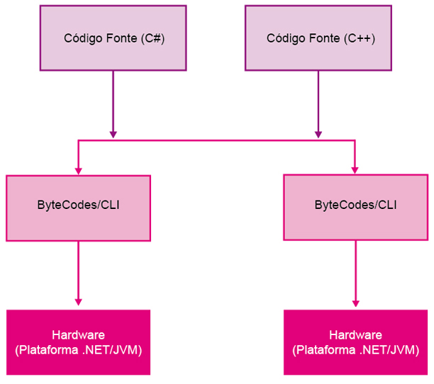

Nesta primeira aula, abordaremos os conceitos fundamentais de Arquitetura de Computadores. Apresentaremos a técnica de máquinas multiníveis e a evolução dos computadores, desde a válvula até os circuitos integrados de larga escala, tudo isso dentro do padrão proposto por Von Newmann.
Desde a Antiguidade, pode-se observar a necessidade do homem em computar (calcular). Inicialmente ele utilizava seus próprios dedos como forma de contagem, daí a base de nosso sistema de numeração ser decimal. Com o passar dos tempos, os dez dedos não eram mais suficientes, então ele passou a utilizar pedrinhas: "O pastor guardava em um saco uma pedrinha para cada ovelha de seu rebanho, depois associava cada pedrinha a uma ovelha". As evoluções não pararam e o homem aperfeiçoou suas técnicas criando instrumentos de apoio à contagem e computo. Cada vez mais, os números foram crescendo, a necessidade de precisão e a dificuldade em solucionar cálculos mais e mais complexos levou o homem a criar mecanismos com o intuito de simplificar uma tarefa tão árdua. Daí surgiu ferramentas como: ábaco, régua de cálculo, máquina de calcular e o computador.
O computador é uma máquina capaz de receber, armazenar, tratar e produzir informações de forma automática, com grande rapidez e precisão.
A evolução dos sistemas de computação teve seu início no século XVI, mas estes somente mostraram-se úteis no século XX, e sua vulgarização se deu graças à recente evolução na microeletrônica
Atualmente, as famílias de computadores podem ser classificadas em cinco grupos distintos:
A tabela a seguir dá um exemplo das máquinas comerciais que se enquadram nesses grupos e as suas aplicações típicas.
A grande maioria dos computadores existentes atualmente segue um modelo proposto pelo matemático americano Von Neumann, por volta de 1940.
Nesse modelo, um elemento processador segue as instruções armazenadas em uma memória de programas, para ler canais de entrada, enviar comandos sobre canais de saída e alterar as informações contidas em uma memória de dados.
Esse modelo inicial evoluiu para uma estrutura em barramento, que é a base dos computadores modernos. Nessa estrutura, as memórias de dados e de programa são fundidas em uma memória única, e as comunicações entre elementos são efetuadas por meio de uma via comum de alta velocidade.
A história dos computadores começou no momento em que o homem sentiu a necessidade de efetuar cálculos complexos de maneira automática.
O primeiro elemento com que o homem contou para fazer seus cálculos foi o conjunto de dedos de suas mãos, daí veio a palavra digital, vindo de dígito, que significa dedo. Com a evolução da humanidade, fez-se necessárias novas invenções para auxiliar os cálculos.
A primeira calculadora de que se tem notícias é o ábaco, de origem chinesa, do século V a.C., capaz de efetuar operações algébricas elementares.
Anteriormente à década de 1940 já existiam calculadoras mecânicas, dentre elas, pode-se destacar: a calculadora de Charles Babbage.
Uma das primeiras máquinas processadoras dados data de 1880, quando Hermann Hollerith, funcionário do United States Census Bureau, inventou uma máquina para realizar as operações de recenseamento da população. A máquina "lia" cartões perfurados em código BCD (Binary Coded Decimal) e efetuava contagens da informação referente à perfuração respectiva. O sistema foi patenteado em 1884. As máquinas de Hollerit foram utilizadas no censo de 1890 nos EUA. O tempo gasto nesse recenseamento foi 1/3 do tempo normal.
Em 1896, Hollerit fundou a Tabulating Machine Company, que construía as tabuladoras e outros dispositivos por ele inventados. Com o crescimento da empresa, ela passou a chamar-se, em 1911, Computing Tabulating and Recording Company e, em 1924, passou a ostentar o nome que tem atualmente, IBM – International Business Machines Corporation.
Foi na década de 1940 que surgiram as primeiras válvulas eletrônicas. O Exército americano necessitava de um equipamento para efetuar cálculos de balística, foi quando se iniciaram os estudos para esse fim.
Cada válvula era capaz de representar um bit de informação (somente aceitava dois estados, ligada ou desligada). Os bytes eram compostos por oito válvulas.
Foi em 1947 que surgiu o primeiro transistor, produzido pela Bell Telephone Laboratories. Essa descoberta revolucionou a eletrônica, e os circuitos passaram a consumir muitíssimo menos energia, a ocupar menos espaço, isso a um custo bem satisfatório. Os transistores eram e são muito mais confiáveis que as válvulas. São feitos de cristal de silício, o elemento mais abundante na Terra.
Da mesma forma, os transistores, nos circuitos digitais, foram utilizados para representar os dois estados: ligado/desligado, ou seja, zero/um.
Nos anos 1960 e 70, por causa do emprego do transistor nos circuitos, se deu a explosão, o boom do uso de computadores. Eles ocupavam menos espaço e tinham um custo satisfatório. Em 1968, chegou o primeiro computador da Unicamp, um IBM 1130, com 16 KB de memória e um disco de 1 MB. Foi um acontecimento, ele trabalhava com cartões perfurados. Rodava programas em ASSEMBLER, Fortran e PL1. Para dar partida, se utilizava console e cartões perfurados especialmente codificados, denominados ?cold start?, funções executadas hoje pela ROM e o BIOS.
Nos anos 1960, iniciou-se o encapsulamento de mais de um transistor num mesmo receptáculo. Surgiu assim o Circuito Integrado – CI. Os primeiros contavam com cerca de 8 a 10 transistores por cápsula. Nascem, então, os chips.
Durante a década de 1970, com a tecnologia da alta escala de integração (LSI – Large Scale of Integration), pôde-se combinar até 65 mil componentes em uma só pastilha de silício (chip).
Nos anos 1980, com o grande desenvolvimento da tecnologia de circuitos integrados, o número de transistores podendo ser integrados numa pastilha de silício atingiu a faixa dos milhares e, logo em seguida, dos milhões. Foi assim que surgiram os novos computadores, ainda menores, mais velozes e mais poderosos que aqueles da geração anterior.
Na segunda metade da década de 1990, houve a passagem da LSI para a VLSI (Very Large Scale of Integration – muito alta escala de integração).
Desde o início da década de 1980, os preços haviam caído de tal maneira que já começava a ser possível a uma pessoa ter o seu próprio computador — começava então a era da informática pessoal.
Os computadores pessoais passaram então a ser utilizados de uma maneira relativamente distinta da dos grandes computadores de então. No início dessa geração, nasceu a Intel, que começou a desenvolver o primeiro microprocessador, o Intel 4004 de 4 bits, um circuito integrado com 2250 transistores, equivalente ao ENIAC.
O 4004 foi seguido pelo Intel 8008 de 8 bits e, mais tarde, pelo Intel 8080. O primeiro microcomputador da história foi o Altair 8800, que usava o chip Intel 8088 e tornou-se padrão mundial da época para os microcomputadores de uso pessoal, abrindo uma nova era na história da informática.
Stephen Wozniak e Steve Jobs formaram em 1976 uma pequena empresa, a Apple, onde construíram, numa garagem de fundo de quintal, o Apple I. Um ano depois, com um novo e melhor projeto, surgiu o Apple II, primeiro microcomputador com grande sucesso comercial e, mais tarde, o Apple III. Em 1983, entrou no mercado o Lisa e, em 1984, o Macintosh, com tecnologia de 32 bits.
Em 1981, a IBM entrou no mercado de micros, introduzindo o PC, um microcomputador com tecnologia de 16 bits (Intel 8088), que em pouco tempo se tornou um padrão.
Em 1993, chegou ao mercado o Pentium, cuja versão Pentium III possui cerca de nove milhões de transistores. O Pentium trouxe um novo fôlego às chamadas estações de trabalho (microcomputadores poderosos usados em tarefas pesadas, como computação gráfica e aplicações científicas).
Uma das novidades dele é que possibilita a simulação de dois processadores, ou seja, um princípio de paralelização, antes possível apenas em supercomputadores e que agora está ao alcance dos usuários de microcomputadores.
A evolução das aplicações de multimídia, envolvendo gráficos, imagens e sons, tornou uma necessidade a implementação de instruções que facilitassem sua execução.
Assim, a Intel adicionou ao Pentium 57 novas instruções voltadas para esse tipo de processamento, que são as chamadas instruções MMX, ou seja, Multimedia Extentions. São instruções que englobam várias instruções comuns, e são executadas por hardware, facilitando aos produtores de software a criação de seus programas, já se valendo dessas novas instruções. Tais instruções propiciam um bom ganho em velocidade de processamento.
O P55C apresenta uma cache interna de 32 kB, o dobro das dos Pentiums P54C. Isso pode se traduzir por uma melhoria de performance da ordem de 10% nos processamentos ditos normais, não envolvendo as funções MMX.
Engloba o poder de processamento de 32 bits do Pentium PRO, uma melhor performance nos programas de 16 bits e as facilidades do Pentium MMX, operando com clock interno de 266 MHz e até 300 MHz. Seu encapsulamento ocorre com uma cache externa ou cache 2, que, contígua ao processador, facilita o gerenciamento da memória e melhora seu desempenho.
Semelhante ao Pentium II, é uma opção mais barata, também operando com um clock externo de 66 MHz e um clock interno de 300 MHz, porém sem a cache 2 e as vantagens advindas dela.
Quando mencionamos sistemas de numeração, estamos nos referindo à utilização de um sistema para representar uma numeração, ou seja, uma quantidade. Sistematizar algo seria organizar, colocar em ordem, submeter a determinadas regras. Um sistema de numeração seria uma forma de organizar a representação de um número.
Exemplo: quando contamos algo ou expressamos algum valor, utilizamos, no dia a dia, um sistema de numeração que é o sistema decimal. Para isso, seguimos a organização dos números, pois eles obedecem a certa ordem, e uma das regras é utilizar somente os caracteres 0, 1, 2, 3, 4, 5, 6, 7, 8, 9 combinados, obedecendo à ordenação, para formar os números.
O exemplo de um sistema de numeração diferente seria utilizar os seguintes caracteres: 0, 1, 2, 3, C, %,} para representar os números. Ordenando esses caracteres do mesmo modo que o sistema decimal, a contagem nesse sistema seria feita na seguinte ordem: 1, 2, 3, C, %,}, 10, 11, 12, 13, 1C, 1%... O equivalente ao número 10 no sistema decimal seria representado pelo número 13 nesse sistema, o número 11 seria 1C, e assim por diante.
Quando desejamos registrar um valor de tensão igual a trinta e quatro vírgula cinquenta e dois volts, usamos os caracteres 3, 4, 5, e 2 dispostos numa certa ordem: 34,52 volts. Essa representação é conhecida como notação posicional do valor observado, em que a importância de cada caractere depende da sua posição em relação aos demais caracteres. Os caracteres têm maior significação no sentido da direita para a esquerda. No caso, os caracteres 3 e 2 são, respectivamente, o de maior e menor significação.
Os sistemas de numeração foram criados pelo homem com o objetivo de quantificar as grandezas relacionadas às suas observações. Tais sistemas foram desenvolvidos por meio de símbolos, caracteres e do estabelecimento de regras para a sua representação gráfica. O conjunto desses símbolos ou caracteres chamamos de base ou raiz do sistema, "r".
A base de um sistema de numeração é o número decimal que um sistema de numeração utiliza para indicar uma quantidade e, geralmente, é o número de caracteres diferentes utilizados para compor o sistema.
O sistema decimal é dito de base 10 por utilizar somente 10 caracteres diferentes para representar os números (os dígitos de 0 a 9), e a quantidade real representada pelos números tem como base o valor 10.
Por exemplo, na contagem do sistema decimal, após o número 9 já utilizamos todos os caracteres diferentes disponíveis, que são 10 (observe que o caractere "0" também está incluído), e um número maior que 9 é representado utilizando uma convenção que atribui um significado numérico quantitativo à posição ou lugar ocupado por um dígito. Cada posição ocupada por um caractere no número possui um "peso" diferente, como no exemplo abaixo:
3004 = 3 × 10³ + 0 × 10² + 0 × 10¹ + 4 × 10⁰
O mesmo artifício é utilizado em outros sistemas de numeração, ou seja, cada caractere que compõe um número possui um "peso" de potências do valor da base que variam de acordo com a posição ocupada pelo caractere no número – no caso do sistema decimal, potências de 10.
No exemplo com o sistema 0, 1, 2, 3, C, %, }, o valor da base é 7, porque 0, 1, 2, 3, C, %,} são um conjunto de sete caracteres diferentes que posso utilizar para compor um número nesse sistema, e a quantidade que os números representam são expressas com base no valor 7.
O número 31} C representa uma quantidade igual a que número no sistema decimal? Para descobrimos, primeiro, fazemos a potenciação dos caracteres no sistema original₇, para descobrimos suas bases e expoentes:
3 × 7³ + 1 × 7² + } × 7¹ + C × 7⁰.
Depois, fazemos a equivalência no sistema decimal₁₀, para evidenciarmos os fatores que se multiplicarão às bases do sistema original₇. Como 3₇ (sistema original) = 3₁₀ (sistema decimal), concluímos que:
1₇ = 1₁₀
}₇ = 6₁₀
C₇ = 4₁₀
(repare que zero no sistema decimal também equivale a zero na ordem de quantidade, ou seja, embora a contagem comece do caracter zero, também começaremos do zero na ordem de contagem e não do um, como é usual).
Então, basta utilizar o respectivo fator decimal₁₀ junto à base exponenciada original₇.
Assim:
31}C = 3 × 7³ + 1 × 7² + 6 × 7¹ + 4 × 7⁰
31}C = 3 × 343 + 1 × 49 + 6 × 7 + 4 × 1
31}C = 1029 + 49 + 42 + 4
31}C₇ = 1.124₁₀
Quando utilizamos sistemas de numeração diferentes, procuramos adotar uma convenção para a identificação de números com bases de numeração diferentes. Exemplo: 11100₂ = 28₁₀. O número 11100₂ no sistema de base 2 é igual ao número 28₁₀ no sistema decimal.
Os números decimais são os mais utilizados atualmente de nosso conhecimento. Uma representação posicional no sistema decimal pode ser desenvolvida numa forma polinomial que envolve um somatório de potências de 10. Como exemplo, o número três mil e quatro:
3004 = 3 × 10³ + 0 × 10² + 0 × 10¹ + 4 × 10⁰
3004 = 3 × 1000 + 0 × 100 + 0 × 10 + 4 × 1
3004 = 3000 + 0 + 0 + 4
3004 = 3004
É comum utilizarmos um índice (base 2, 10 ou 16) à direita do dígito menos significativo na representação posicional, para identificar a base de representação. No caso da base decimal, esse índice pode ser omitido. Os circuitos ditos analógicos processam informações usando o sistema decimal.
O sistema de numeração de base 2 é chamado de sistema binário₂, pois utiliza somente dois dígitos: 0 e 1. Todos os números são representados conforme o posicionamento e a quantidade desses dois dígitos. A contagem segue o mesmo raciocínio utilizado no sistema decimal: após o último dígito, incrementa-se uma posição à esquerda, e a posição à direita é zerada, repetindo-se toda a sequência de números anterior:
1, 10, 11, 100, 101, 110...
Para evitar confusão com o sistema de numeração decimal, lemos dígito por dígito no sistema binário:
10 = hum, zero
1101 = hum, hum, zero, hum
Podemos expressar um número fracionário no sistema binário utilizando a vírgula binária:
1,1001; 0,0001; 1101,0101...
Esse sistema pode ser utilizado para representar dois estados de um elemento: uma lâmpada (acesa ou apagada), uma chave (aberta ou fechada), uma fita magnética (variação ou não na magnetização), na genética (presença ou ausência de genes), pois, nos cálculos teóricos, o sistema binário é o mais utilizado para facilitar a manipulação dos dados.
Qualquer algarismo ou dígito de número binário é denominado de bit (binary digit). Exemplo: 111011 ? 6 bits
Uma representação posicional no sistema binário pode ser desenvolvida numa forma polinomial, que envolve um somatório de potências de dois.
Assim, o equivalente decimal do número binário é obtido da representação polinomial do número na base dois, por meio do processamento da soma decimal.
Exemplo 1: Conversão do número binário 110010 para decimal:
1- O primeiro dígito da direita para a esquerda do número binário multiplica a potência de 2⁰, o segundo dígito da direita para a esquerda multiplica 2¹, o terceiro dígito à direita multiplica 2², e assim por diante:
0₂ × 2⁰ = 0 × 1 = 0₁₀
1₂ × 2¹ = 1 × 2 = 2₁₀
0₂ × 2² = 0 × 4 = 0₁₀
0₂ × 2³ = 0 × 8 = 0₁₀
1₂ × 2⁴ = 1 × 16 = 16₁₀
1₂ × 2⁵ = 1 × 32 = 32₁₀
2- A soma dessas multiplicações resulta no número decimal₁₀:
0 + 2 + 0 + 0 + 16 + 32 = 50₁₀:
Assim:
110010₂ = 50₁₀
Exemplo 2:
10101110101001₂ = 1 × 2¹³ +
0 × 2¹² +
1 × 2¹¹ +
0 × 2¹⁰ +
1 × 2⁹ +
1 × 2⁸ +
1 × 2⁷ +
0 × 2⁶ +
1 × 2⁵ +
0 × 2⁴ +
1 × 2³ +
0 × 2² +
0 × 2¹ +
1 × 2⁰
10101110101001₂ = 8192 + 0+2048 + 0 + 512 + 256 + 128 + 0 + 32 + 0 + 8 + 0 + 0 +1
10101110101001₂ = 1117710₁₀
Podemos representar um número decimal fracionário por um número binário, como no exemplo a seguir:
111,0101₂ =
1 x 2² +
1 x 2¹ +
1 x 2⁰ +
0 x 2⁻¹ +
1 x 2⁻² +
0 x 2⁻³ +
1 x 2⁻⁴
111,0101₂ =
4 + 2 + 1 + 0 + 0,25 + 0 + 0,0625
111,0101₂ = 7,3125₁₀
Para a representação de números negativos, pode-se utilizar o sinal "-". Outro método utilizado na prática é o acréscimo de um dígito binário à esquerda do número (bit mais signficativo ou MSB) para indicar esse sinal, ou seja, para indicar se o número é negativo ou não. Os números binários compostos dessa maneira são chamados de números binários com sinal ou números de magnitude com sinal pois o primeiro dígito representa o sinal e os dígitos restantes significam a magnitude do número. Geralmente, o dígito 0 indica um número positivo e o 1 indica um número negativo.
Surge um problema relacionado ao sistema binário com sinal; na verdade, uma ambiguidade, porque um mesmo número binário pode se tratar de um número sem sinal e com sinal negativo. P. ex., 1001₂, que equivaleria ao número decimal 9₁₀ (positivo). Pela regra do número de magnitude com sinal, como o MSB é 1, teoricamente, equivaleria a um número decimal negativo. Mas qual? Não pode equivaler a -9, pois 1001 já representa o número 9 positivo. Daí surge a teoria do complemento de dois ou formato complemento de dois, que é variante do sistema binário.
A teoria por trás dele é muito simples, para obter a representação negativa de um número, você deve: a) inverter o valor de todos os bits (complemento de um); e b) somar 1 no bit de menor relevância (LSB).
Seguindo as setas da esquerda para a direita passamos de binário para decimal: vemos que o MSB é 1, então pegamos o valor 1001₂ e invertemos seus bits, obtendo 0110₂. Após isso, somamos 1, tendo assim 0111₂ como resultado final, que convertido para decimal, vale 7. Mas como sabemos que este número é a representação de um valor usando complemento de dois, sabemos que seu valor é negativo, portanto, -7.
E ainda dá pra fazer o caminho contrário! Se formos da direita para a esquerda temos o seguinte: temos o número -7 e queremos representá-lo em binário no formato de complemento de dois. Convertemos o número 7 em binário, obtendo 0111₂ e subtraímos 1, o que nos retorna 0110₂. Invertemos os bits, o que resulta em 1001₂. Veja que chegamos em um número com o MSB valendo 1, o que nos sinaliza que é um número negativo.

Mais sobre complemento de dois será abordado na soma e subtração em Introdução aos Processos de Aritimética.
Efetua-se uma operação aproximadamente inversa à conversão de binário para decimal utilizando o método das divisões sucessivas: divide-se sucessivamente o número decimal por dois até resultar em um número menor que dois, e os restos dessas divisões com o último resultado formarão o número binário. Esse mesmo método pode ser usado para outros sistemas de numeração de base diferente de 2, como o sistema hexadecimal, cuja base é 16.
Exemplo 1: Conversão do número decimal 1029₁₀ para o sistema binário.
Divide-se o número por dois, que é a base do sistema binário. O resto dessa divisão será o último dígito do número binário:

O resultado dessa divisão é dividido novamente por 2, e o resto será o penúltimo dígito do número binário. O resultado é dividido sucessivas vezes por 2, até a última divisão, em que o resultado for 0 ou 1. O resultado da última divisão será o primeiro dígito do número binário.

O número binário é formado pelos restos e pelo resultado da divisão final, sendo este o primeiro número e o primeiro resto, o último número binário. Ou seja:
1029₁₀ = 10000000101₂
Exemplo 2: Conversão do número 28374₁₀ decimal para binário.

O sistema de numeração de base 8 que utiliza os caracteres de 0 a 7 do sistema de numeração decimal, na respectiva ordem, é chamado de sistema octal. Esse sistema era mais utilizado antigamente, pois é uma simplificação do sistema binário: 3 dígitos binários eram substituídos por 1 dígito no sistema octal, porque o valor máximo de um número de 3 dígitos binários é 111 (3bits), ou seja, 7, que é o número máximo de caracteres diferentes utilizados pelo sistema octal (base 8). Atualmente, o sistema octal entrou em desuso pela utilização cada vez maior da informática e de circuitos eletrônicos digitais, que empregam somente números binários. Em substituição ao sistema octal, é utilizado o sistema hexadecimal.
0₁₀ = 0₈
1₁₀ = 1₈
2₁₀ = 2₈
3₁₀ = 3₈
4₁₀ = 4₈
5₁₀ = 5₈
6₁₀ = 6₈
7₁₀ = 7₈
8₁₀ = 10₈
9₁₀ = 11₈
10₁₀ = 12₈
etc...
O sistema hexadecimal de numeração pode representar 4 bits do sistema binário por cada dígito (o número máximo obtido com quatro dígitos binários é 16₁₀, que é a base do sistema hexadecimal) utilizando os dígitos de 0 a 9 do sistema decimal e representando os números de 10 a 15 pelos caracteres A, B, C, D, E, F. A contagem no sistema hexadecimal se processa da seguinte forma: 0,1, 2, 3, 4, 5, 6, 7, 8, 9, A, B, C, D, E, F, 10, 11, 12, 13, 14, 15, 16, 17, 18, 19, 1A, 1B...
A₁₆ = 10₁₀
99F₁₆ = 2463₁₀
BBC₁₆ = 3004₁₀
Uma representação posicional no sistema hexadecimal pode ser desenvolvida numa forma polinomial que envolve um somatório de potências de 16. Executa-se um processo semelhante à conversão dos números binários para decimal.
Exemplo 1: Conversão do número A01₁₆ hexadecimal para decimal. O primeiro dígito da direita para a esquerda do número hexadecimal multiplica a potência de 16⁰, o segundo dígito da direita para a esquerda multiplica 16¹, o terceiro dígito à direita multiplica 16², e assim por diante. Caso exista um dígito maior que 9, deve-se convertê-lo para decimal e multiplicar normalmente:
1 × 16⁰ = 1 × 1 = 1₁₀
0 × 16¹ = 0 × 16 = 0₁₀
A × 16² = A × 256 = 10 × 256 = 2560₁₀
A soma dessas multiplicações resulta no número decimal:
1 + 0 + 2560 = 2561₁₀
Assim:
A01₁₆ = 2561₁₀
Exemplo 2:
BF20₁₆ = B × 16³ + F × 16² + 2 × 16¹ + 0 × 16⁰
BF20₁₆ = 11 × 4096 + 15 × 256 + 2 × 16 + 0 × 1
BF20₁₆ = 45056 + 3840 + 32 + 0
BF20₁₆ = 48928₁₀
Exemplo 3:
600CD₁₆ = 6 × 16⁴ + 0 × 16³ + 0 x 16² + C × 16¹ + D × 16⁰
600CD₁₆ = 6 × 65536 + 0 × 4096 + 0 × 256 + 12 × 16 + 13 × 1
600CD₁₆ = 393421₁₀
Utiliza-se o método das divisões sucessivas: divide-se sucessivamente o número decimal por 16 até resultar em um número menor que 16, e os restos dessas divisões com o resultado da última divisão formarão o número hexadecimal.
Exemplo 1: Conversão do número decimal 4096 para hexadecimal.

Assim:
4096₁₀ = 1000₁₆
Exemplo 2: Conversão do número 3748 decimal para hexadecimal

Se:
14₁₀ = E₁₆
10₁₀ = A₁₆
Logo:
3748₁₀ = 14₁₀, 10₁₀ e 4₁₀
3748₁₀ = EA4₁₆


É possível a conversão de informação binária para hexadecimal, convertendo-se primeiro para decimal e em seguida para hexadecimal, conforme os métodos já estudados. Esse método é o de conversão indireta.
Porém, é possível a conversão direta de binário para hexadecimal. É simples: substitui-se quatro dígitos binários por um dígito hexadecimal, porque 4 digitos binários (4bits) alcançam a quantia decimal de máximo 15 (F₁₆), que, por acaso, é a base do sistema hexadecimal.
Exemplo 1: Conversão do número 11101₂ em binário para o sistema hexadecimal.
Obtenho os quatro últimos dígitos do número binário: 1101
Converto diretamente para hexadecimal: 1101₂= 13₁₀ = D₁₆
Com isso, obtenho o último dígito do número hexadecimal: D₁₆
Repito o mesmo método para os dígitos restantes do número binário: 1₂ = 1₁₀= 1₁₆
Unindo os dois dígitos, obtenho o número em hexadecimal: 11101₂ = 1D₁₆
Exemplo 2: Conversão do número 100101010₂ em binário para o sistema hexadecimal.
1010₂ = 10₁₀ = A₁₆
0010₂ = 2₁₀ = 2₁₆
1₂ = 1₁₀ = 1₁₆
100101010₂ = 12A₁₆
Já conversão de hexadecimal para binário pode ser feita de forma direta do modo contrário ao anterior: converte-se em quatro dígitos binários cada dígito hexadecimal. O último dígito do número hexadecimal fornece o valor dos quatro últimos dígitos do número binário.
Exemplo 3: Conversão do número CDF hexadecimal para o sistema binário.
F₁₆ = 15₁₀ = 1111₂
D₁₆ = 13₁₀ = 1101₂
C₁₆ = 12₁₀ = 1100₂
CDF₁₆ = 110011011111₂
Exemplo 4: Conversão do número 1002₁₆
hexadecimal para o sistema binário.
2₁₆ = 0010₂
0₁₆ = 0000₂
0₁₆ = 0000₂
1₁₆ = 0001₂
1002₁₆ = 1000000000010₂
O computador trabalha com sinais elétricos em dois níveis R 0 e +V ou 0 e RV R, os quais são chamados de estados lógicos. Para definir cada estado lógico, ficou estabelecido que, quando temos 0 V (zero volt), o valor do estado lógico é 0 (zero), e, quando temos + V ou ? V, o valor do estado lógico é 1.
Assim, com a disponibilidade de apenas dois números, os cientistas criaram uma tabela de combinações desses estados. As tabelas são formadas de uma composição de 8 estados lógicos. Essa combinação é chamada de byte, e cada um dos estados lógicos são chamados de bit. Um conjunto de 8 bits, portanto, equivale a um byte.
Para representar a linguagem do usuário, o computador usa a relação da tabela de combinações dos estados lógicos para compor um caractere, o qual se constitui das letras de uma palavra ou de pontuações das frases. Um caractere equivale ao conjunto de 8 bits (1byte). Uma palavra se forma com a combinação de um conjunto de bytes. Por isso, cada letra, número, pontuação e sinais gráficos se forma no computador pela associação de 8 bits.
No entanto, para não haver diversidade de tabelas entre os fabricantes, garantindo a interoperabilidade entre eles, padronizou-se o mesmo valor para cada caractere. Instituiu-se a tabela ASCII (American Standard Code for Information Intercharge) como um conjunto de códigos-padrão para o computador representar números, letras, pontuação e outros caracteres. A tabela ASC II mostra no que um valor hexadecimal (decimal) corresponde ao código ASC II, que nada mais é que os nossos caracteres de digitação (ASCII).
Os computadores têm suas características de processamento expressas em número de bits (8, 16, 32 ou 64). Cada instrução enviada para o microprocessador pode ser formada por 1 byte, 2 bytes, 3 bytes e 4 bytes. Assim, dependendo da instrução, são necessárias de 1 (Sistema 64bits) a 4 linhas (Sistema 8bits) de memória para armazená-la e cada linha, repita-se, é múltipla de 8 (1024 bytes p. ex., e não 1000 bytes).
Já o espaço em disco ou memórias define-se como múltiplos de 1KByte, em que 1KB é igual a 1024 Bytes (2¹⁰). A tabela a seguir mostra os múltiplos do byte.

Um sistema numérico pode ser usado para realizar duas operações básicas: adição e subtração. Pelo uso de adição e subtração, você pode então realizar multiplicações, divisões e qualquer outra operação numérica. Nesta aula, a aritmética binária (adição, subtração, multiplicação e divisão) será examinada, usando a aritmética decimal como um guia.
A adição binária é realizada como a adição decimal. Se dois números decimais 56719 e 31863 são adicionados, a soma 88582 é obtida. Você pode analisar os detalhes dessa operação da seguinte maneira:
Somando a primeira coluna, com os números decimais 9 e 3, o resultado é o dígito 2 com um transporte de 1. O transporte é então somado à próxima coluna. Adicionado à segunda coluna (1 + 1 + 6), o resultado é o número 8, sem transporte. Esse processo continua até que todas as colunas (incluindo os transportes) tenham sido somadas. A soma representa o valor numérico das parcelas.
Quando você soma dois números binários, você realiza a mesma operação para somar.

Para ilustrar o processo de adição binária, vamos somar 1101 a 1101:
Na primeira coluna, 1 mais 1 resulta 0 com um transporte de 1 para a segunda coluna. Isso concorda com a regra 4.
Na segunda coluna, 0 mais 0 resulta 0 sem transporte. A esse resultado, o transporte da primeira coluna é somado. Assim, 0 mais 1 resulta 1 sem transporte. Essas duas adições na segunda coluna dão uma soma total de 1 com um transporte de 0. As regras 1 e 2 foram usadas para obter a soma.
Na terceira coluna, 1 mais 1 resulta 0 com um transporte de 1. Nessa soma, o transporte da segunda coluna é somado. Isso resulta uma soma da terceira coluna de 0 com um transporte de 1 para a coluna 4. As regras 4 e 2 foram usadas para obter a soma.
Na coluna quatro, 1 mais 1 resulta 0 com um transporte de 1. Para essa soma, o transporte da terceira coluna é somado. Isso resulta uma soma da quarta coluna de 1 com um transporte para a quinta coluna. A regra 5 permite somar três 1 binários e obter 1 com um transporte de 1.
Na quinta coluna, não há parcelas. Portanto, você pode assumir a regra 3 e somar o transporte a 0 para obter a soma 1. Assim, a soma 1101₂ mais 1101₂ é igual a 11010₂
Um sistema numérico pode ser usado para realizar duas operações básicas: adição e subtração. Pelo uso de adição e subtração, você pode então realizar multiplicações, divisões e qualquer outra operação numérica. Nesta aula, a aritmética binária (adição, subtração, multiplicação e divisão) será examinada, usando a aritmética decimal como um guia.

A subtração binária é realizada exatamente como subtração decimal. Portanto, antes de realizarmos a subtração binária, vamos revisar a subtração decimal. Você sabe que, se 5486 é subtraído de 8303, a diferença 2817 é obtida.
Como o dígito 6 no subtraendo é maior que o dígito 3 no minuendo, um 1 é emprestado do próximo dígito de maior ordem no minuendo. Se esse dígito é zero, como no nosso exemplo, 1 é emprestado do próximo dígito de ordem maior que contenha um número diferente de zero. Aquele dígito é reduzido de 1 (de 3 para 2 no nosso exemplo), e aos dígitos pulados no minuendo é dado o valor 9. Isso é equivalente a remover 1 de 30 com o resultado de 29, por exemplo.
No sistema decimal, o dígito emprestado tem o valor de 10. Portanto, o dígito do minuendo agora tem o valor 13, e 6 de 13 resulta 7. Na segunda coluna 8 de 9 resulta 1. Desde que o subtraendo é maior que o minuendo na terceira coluna, 1 é transportado do próximo dígito de ordem superior. Isso suspende o valor do minuendo de 2 para 12, e 4 de 12 resulta 8.
Na quarta coluna, o minuendo foi reduzido de 8 para 7 por causa do empréstimo prévio, e 5 de 7 resulta 2. Toda vez que 1 é emprestado de um dígito de ordem superior, o empréstimo é igual, em valor, à base do sistema numérico. Portanto, um empréstimo no sistema numérico decimal é igual a 10, enquanto um empréstimo no sistema numérico binário é igual a 2.
Quando se subtrai um número binário de outro, você usa o mesmo método descrito para subtração decimal.

Para ilustrar o processo da subtração binária, vamos subtrair 1101 de 11011. A linha "empréstimo" nos mostra o valor de cada dígito do minuendo depois da ocorrência de cada transporte. Lembre-se de que o binário 10 é igual ao decimal 2.

Na primeira coluna, 1 de 1 resulta 0 (regra 2). Então, 0 de 1 na segunda coluna resulta 1 (regra 3). Na terceira coluna, 1 de 0 necessita de um empréstimo da quarta coluna. Assim, 1 de 10₂ resulta 1 (regra 4). O minuendo na quarta coluna é agora 0, por causa do empréstimo. Portanto, um empréstimo é necessário da quinta coluna, de maneira que 1 de 10₂ na quarta coluna resulta 1 (regra 4). Por causa do empréstimo anterior, o minuendo na quinta coluna é agora 0, e o subtraendo é 0 (não existe), de modo que 0 de 0 resulta 0 (regra 1). O 0 na quinta coluna não é mostrado na diferença, pois não é um bit significativo. Assim, a diferença entre 11011₂ e 1101₂ é 1110₂. Pode-se verificar isso convertendo os números binários para decimal. Como exemplo de subtração binária, subtraia 00100101₂ de 11000100₂, como mostrado a seguir.
Quando um empréstimo ("borrow") é necessário, 1 é obtido do próximo bit de ordem superior que possui 1. Aquele bit, então, torna-se 0 e a todos os bit pulados (bits de valor 0) damos o valor 1. Isso é equivalente a remover 1 de 1000₂.

Como na adição binária, os microprocessadores geralmente realizam subtrações em grupos de números de 8 bits. No exemplo anterior, a resposta contém apenas 6 bits significativos, mas dois 0 foram acrescentados para manter o grupo de 8 bits. Isso será verdade também para o minuendo e o subtraendo.
Uma característica do sistema de complemento de dois é que tanto os números com sinal quanto os números sem sinal podem ser somados pelo mesmo circuito. Por exemplo, suponha que você deseja somar os números sem sinal 132₁₀ e 14₁₀.
O microprocessador tem um circuito ALU que pode somar números binários sem sinal. Quando aparece o padrão 10000100₂ em uma entrada e 00001110₂ na outra entrada, resulta 10010010₂ na saída.
Surge a pergunta: como a ALU sabe que os padrões de bits nas entradas representam número sem sinal e não números em complemento de dois?
E a resposta é: não sabe. A ALU sempre soma como se as entradas fossem números binários sem sinal. Sempre produzirá o resultado correto, mesmo se as entradas forem números em complemento de dois.
Observe o exemplo anterior. Se você assumir que as entradas são números com sinal em complemento de dois, então:
Verifique que os padrões de bits são os mesmos. Apenas o significado mudou.
Na primeira linha, nós assumimos que o padrão de bits representam números sem sinal e o somador produz o resultado sem sinal conveniente. Na segunda linha, nós assumimos que os padrões de bits representam números com sinal. Novamente, o somador fornece o resultado correto.
Isso comprova um ponto muito importante. O somador na ALU sempre soma padrões de bits como se eles fossem números binários sem sinal.
É a nossa interpretação desses padrões que decide se números com ou sem sinal estão sendo indicados. O bom do complemento de dois é que os padrões de bits podem ser interpretados de qualquer maneira. Isso nos permite trabalhar com números com e sem sinal sem requerer diferentes circuitos para cada padrão.
Existe outra forma de fazer a subtração em binário. Pode-se obter o resultado da subtração somando-se o complemento de 2 do valor, e ignorando-se o último algarismo (MSB).

Em 1854, o matemático inglês George Boole apresentou um sistema matemático de análise lógica conhecido como álgebra de Boole. Somente em 1938, um engenheiro americano utilizou as teorias da álgebra de Boole para a solução de problemas de circuitos de telefonia com relés, tendo publicado um artigo que praticamente introduziu na área tecnológica o campo da eletrônica digital.
Os sistemas digitais são formados por circuitos lógicos denominados de portas lógicas que, utilizados de forma conveniente, podem implementar todas as expressões geradas pela álgebra de Boole.
Existem três portas básicas (E, OU e NÃO) que podem ser conectadas de várias maneiras, formando sistemas que vão de simples relógios digitais aos computadores de grande porte.
A função E (AND) é aquela que executa a multiplicação de duas ou mais variáveis booleanas. Sua representação algébrica para duas variáveis é S = A × B, em que se lê: S = A e B.
S = A × B
Para compreender a função E (AND) da álgebra booleana, deve-se analisar o circuito da Figura 1, para o qual se adota as seguintes convenções: chave aberta = 0, chave fechada = 1, lâmpada apagada = 0 e lâmpada acesa = 1.
A análise da Figura 1 revela que a lâmpada somente acenderá se ambas as chaves estiverem fechadas e, seguindo a convenção, tem-se: CH A = 1, CH B = 1, que resulta em S = 1.
Pode-se, dessa forma, escrever todas as possíveis combinações de operação das chaves na chamada tabela da verdade, que é definida como um mapa em que se depositam todas as possíveis situações com seus respectivos resultados. O número de combinações possíveis é igual a 2N, em que N é o número de variáveis de entrada.
A porta lógica E é um circuito que executa a função E (AND) da álgebra de Boole, sendo representada, na prática, por meio do símbolo visto na Figura 2.
"A saída da porta E (AND) será 1 somente
se todas as entradas forem 1."
A função OU (OR) é aquela que assume valor 1 quando uma ou mais variáveis de entrada forem iguais a 1, e assume 0 se, e somente se, todas as variáveis de entrada forem iguais a zero. Sua representação algébrica para duas variáveis de entrada é S = A + B, em que se lê: S = A ou B.
S = A + B
Para entender melhor a função OU (OR) da álgebra booleana, analise todas as situações possíveis de operação das chaves do circuito da Figura 3. A convenção é a mesma adotada anteriormente: chave aberta = 0, chave fechada = 1, lâmpada apagada = 0 e lâmpada acesa = 1.
O circuito apresentado mostra que a lâmpada acende quando qualquer uma das chaves estiver fechada e permanece apagada se ambas estiverem abertas, ou seja, CH A = 0, CH B = 0, que resulta em S = 0.
Pode-se, dessa forma, escrever todas as possíveis combinações de operação das chaves na chamada tabela da verdade, que é definida como um mapa em que se depositam todas as possíveis situações com seus respectivos resultados. O número de combinações possíveis é igual a 2N, em que N é o número de variáveis de entrada.
A figura a seguir ilustra a porta lógica que executa a função OU da álgebra de Boole.
""A saída de uma porta OU (OR) será 1
se uma ou mais entradas forem 1."
A função NÃO (NOT) é aquela que inverte ou complementa o estado da variável de entrada, ou seja, se a variável estiver em 0, a saída vai para 1, e, se estiver em 1, a saída vai para 0. É representada algebricamente da seguinte forma: S = Ā, em que se lê: A barra ou NÃO A.
S = Ā
A análise do circuito da Figura 5 ajuda a compreender melhor a função NÃO (NOT) da álgebra booleana. Será utilizada a mesma convenção dos casos anteriores.
Observando o circuito da Figura 5, pode-se concluir que a lâmpada estará acesa somente se a chave estiver aberta (CH A = 0, S = 1); quando a chave fecha, a corrente desvia por ela e a lâmpada apaga (CH A = 1, S = 0).
O inversor é o bloco lógico que executa a função NÃO (NOT). Sua representação simbólica é vista na Figura 6.
"A saída de uma porta NÃO (NOT) assume o nível lógico 1 somente
quando sua entrada é 0 e vice-versa."
Essa função é uma composição das funções E (AND) e NÃO (NOT), ou seja, é a função E (AND) invertida. Sua representação algébrica é , em que o traço indica que ocorrerá uma inversão do produto booleano A × B.
O circuito da Figura 7 esclarece o comportamento da função NE. Observa-se que a lâmpada apaga somente quando ambas as chaves são fechadas, ou seja, CH A = 1, CH B = 1, que implica em S = 0.
A Figura 8 ilustra o circuito que executa a função NE da álgebra de Boole.
"Essa função é o inverso da função E, ou seja, a saída será 0
somente quando todas as entradas forem 1."
Analogamente à função NE (NAND), a função NOU (NOR) é a composição da função OU (OR) com a função NÃO (NOT), ou seja, é a função OU (OR) invertida. É representada algebricamente da seguinte forma: , em que o traço indica que ocorrerá uma inversão da soma booleana A + B.
Para melhor compreender a função NOU (NOR) da álgebra de Boole, pode-se analisar o circuito da figura a seguir, em que se observa que a lâmpada fica acesa somente quando as duas chaves estão abertas. Assim, CH A = 0, CHB = 0, que resulta em S = 1.
A Figura 10 ilustra o circuito que executa a função NOU (NOR) da álgebra de Boole.
"Essa função é o inverso da função OU (OR), ou seja, a saída será 0
se uma ou mais entradas forem 1."
Essa função, como o próprio nome diz, apresenta saída com valor 1 quando as variáveis de entrada forem diferentes entre si. A notação algébrica que representa a função OU EXCLUSIVO (XOR) é , em que se lê: A OU EXCLUSIVO B.
Para entender melhor a função OU EXCLUSIVO (XOR), analise o circuito da Figura 11. Na condição em que as chaves CH A e CH B ficam abertas (e ficam fechadas), não há caminho para a corrente circular e a lâmpada não acende. A lâmpada continua apagada quando as chaves CH A e CH B estão fechadas, pois CH e CH
estão abertas, interrompendo o fluxo de corrente. Portanto, pode-se concluir que esse bloco só terá nível 1 na saída (lâmpada acesa) quando suas entradas forem diferentes.
A Figura 12 simplesmente simboliza o circuito lógico que executa a função OU EXCLUSIVO (XOR). Na verdade, o circuito que efetivamente realiza a função demonstrada na tabela da verdade está ilustrado na Figura 11.
A Figura 13 ilustra o símbolo que representa, na prática, a função XOR.

Observação importante: esse bloco lógico OU EXCLUSIVO (XOR) é definido apenas para duas variáveis de entrada.
Essa função, como seu próprio nome diz, apresenta saída com valor 1 quando houver uma coincidência nos valores das variáveis de entrada. A notação algébrica que representa a função Coincidência é , em que se lê: A Coincidência B.
O circuito da Figura 14 ajuda a compreender a operação da função Coincidência. Quando as chaves CH A e CH B estão abertas (CH e CH
estão fechadas) circula corrente pela lâmpada e ela estará acesa. Quando CH A = 1 e CH B = 0 (CH B=1), não circula corrente pela lâmpada, o que implica em lâmpada apagada. Na situação inversa, CH A = 0 (CH = 1) e CH B = 1, ocorre a mesma coisa e a lâmpada não acenderá. Com as duas chaves fechadas, ou seja, CH A = CH B = 1 (CH = CH = 0) circulará corrente pela lâmpada e esta estará acesa. Portanto, pode-se afirmar que a porta Coincidência terá 1 em sua saída (lâmpada acesa) quando as entradas forem idênticas.
A Figura 15 simplesmente representa simbolicamente o circuito lógico que executa a função Coincidência. Na verdade, o circuito capaz de realizar essa função é ilustrado na Figura 14.
A Figura 16 ilustra o símbolo que representa, na prática, a função XNOR.

Observação importante: Assim como ocorre com o bloco lógico OU EXCLUSIVO (XOR), o circuito COINCIDÊNCIA (XNOR) é definido apenas para duas variáveis de entrada.
Veja também:
Todo circuito lógico executa uma função booleana e, por mais complexo que seja, é formado pela interligação das portas lógicas básicas. Assim, pode-se obter a expressão booleana que é executada por um circuito lógico qualquer.
Para exemplificar, será obtida a expressão que o circuito da Figura 1 executa. O exemplo da Figura 2 visa evidenciar um símbolo de negação muito utilizado e que muitas vezes é esquecido e não considerado. Ele pode ser utilizado na saída de uma porta lógica (?), como na porta NÃO E (NAND) a seguir.
Será visto neste tópico que é possível desenhar um circuito lógico que executa uma função booleana qualquer, ou seja, pode-se desenhar um circuito a partir de sua expressão característica.
O método para a resolução consiste em se identificar as portas lógicas na expressão e desenhá-las com as respectivas ligações, a partir das variáveis de entrada. Deve-se sempre respeitar a hierarquia das funções da aritmética elementar, ou seja, a solução inicia-se primeiramente pelos parênteses. Para exemplificar, será obtido o circuito que executa a expressão S = (A + B).C.(B + D).
Para o primeiro parêntese, tem-se uma soma booleana A + B, logo o circuito que o executa será uma porta OU (OR). Para o segundo, tem-se outra soma booleana B + D, logo o circuito será uma porta OU (OR). Posteriormente, tem-se a multiplicação booleana de dois parênteses com a variável C, sendo o circuito que executa essa multiplicação uma porta E. Para finalizar, unem-se as respectivas ligações obtendo o circuito completo.
Uma maneira de se fazer o estudo de uma função booleana é utilizar a tabela da verdade. Para extrair a tabela da verdade de uma expressão, deve-se seguir alguns procedimentos:
Para exemplificar esse processo, utiliza-se a expressão: . A expressão contém quatro variáveis: A, B, C e D. Logo, existem 2⁴ = 16 possibilidades de combinação de entrada. Dessa forma, monta-se o quadro de possibilidades com quatro variáveis de entrada e três colunas auxiliares, sendo uma para cada membro da expressão e outra para o resultado final.

Neste item, será estudada a forma de obter expressões e circuitos a partir de tabelas da verdade, sendo esse o caso mais comum de projetos práticos, pois, em geral, é necessário representar situações por meio de tabelas da verdade e, a partir delas, obter a expressão booleana e, consequentemente, o circuito lógico. Para demonstrar esse procedimento, será obtida a expressão da seguinte tabela:

Na tabela, analisa-se onde S = 1 e monta-se a expressão adequada:
Para se obter a expressão, basta realizar a soma booleana de cada termo citado:
Nota-se que o método permite obter, de qualquer tabela, uma expressão padrão formada sempre pela soma de produtos.
O projeto de um circuito lógico começa na racionalização do problema, por meio das combinações possíveis, para o entendimento do comportamento de um evento. Feito isso, elabora-se a tabela da verdade que expressa esse comportamento. Da tabela da verdade é possível extrair a expressão algébrica booleana que determina o circuito lógico adequado para comandar o evento desejado (TANENBAUM, 2007).
Uma pessoa deseja projetar um sistema que acione um alarme contra roubo quando alguém forçar a porta de entrada ou janela de sua casa. Por análise, pode-se determinar que a porta e a janela são responsáveis pela sinalização de entrada de dados (A = porta e B = janela), e o alarme é acionado pelo sinal da saída de dados quando alguém tenta entrar na casa. As possíveis situações em que as saídas são perturbadas (acionadas), e consequentemente a saída que se deseja, estão descritas na tabela 1, que se segue:

Diz-se, então, que a tabela 1 é a tabela da verdade para o problema proposto. Como apenas os casos em que a saída é igual a 1 interessam para a solução do problema, temos que os termos dados por cada saída serão expressos da forma como mostra a tabela 2:

O termo significa que A deve ser zero (
) e B deve ser 1 (B), ao mesmo tempo (×), para que o alarme seja acionado (S = 1). O termo
significa que A deve ser 1 (A) e B deve ser 0 (
), ao mesmo tempo (×), para que o alarme seja acionado (S = 1). O termo
significa que A deve ser 1 (A) e B deve ser 1 (B), ao mesmo tempo (×), para que o alarme seja acionado (S = 1). Na tabela 2, na situação em que ocorre uma das possibilidades em que o alarme é acionado (S = 1), o primeiro termo (A = 0 e B = 1) indica que a porta não foi forçada, mas a janela sim. O segundo termo (A = 1 e B = 0) mostra que dessa vez a porta foi aberta e a janela não. O terceiro termo (A = 1 e B = 1) acusa que as duas foram forçadas por alguém.
Para o acionamento do alarme, portanto, serve qualquer uma das alternativas apontadas. Representa-se, então, essa possibilidade com o sinal + entre os termos. A expressão algébrica booleana que ilustra a solução do problema é dada pela soma dos termos: . Para a equação apresentada, cada termo pode ser expresso por uma porta:

Como mostra a Figura 1, o sinal da entrada A foi combinado com o sinal da entrada B numa porta AND. O sinal (• ou ×) indica o tipo de porta usada para essa combinação.

Nesse exemplo da Figura 2, o sinal da entrada A foi invertido numa porta NOT antes de ser combinado com B numa porta AND.

Dessa vez, na Figura 3, o sinal da entrada B foi invertido por uma porta NOT para depois ser combinado com A numa porta AND. A somatória dos termos configura a composição das portas, conforme mostrado no esquema a seguir.

Os três termos estão representados pelos seus respectivos conjuntos de portas, dos quais as devidas saídas são ligadas numa porta OR, determinando assim a combinação dos três termos, como mostra a equação 1 com o sinal (+). Para que se possa verificar se o circuito obtido condiz com a expressão proposta pelo problema, procede-se à análise como segue:

Na saída do circuito, ou seja, na saída da porta OR, o resultado será:
Na literatura, ao se descrever um sistema de computação, é feita uma distinção entre os termos: arquitetura e organização do computador. O termo arquitetura de um computador refere-se aos atributos de um sistema que são visíveis para o programador ou, em outras palavras, aos atributos que têm impacto direto sobre a execução lógica de um programa. Já o termo organização de um computador diz respeito às unidades operacionais e suas interconexões que efetivam as especificações de sua arquitetura, ou seja, como as características da arquitetura são implementadas.
Por atributos de arquitetura, podemos entender: o conjunto de instruções, o número de bits usados para representar os tipos de dados, os mecanismos de E/S etc., enquanto os atributos da organização são transparentes aos usuários e incluem detalhes de hardware, por exemplo: sinais de controle, tecnologia de memória utilizada etc.
Especificar se um computador deve ou não ter uma instrução de multiplicação constitui uma decisão de projeto da arquitetura. Por outro lado, definir se essa instrução será implementada por uma unidade específica de multiplicação ou por um mecanismo que utiliza repetidamente sua unidade de soma é uma decisão de projeto de sua organização. Exemplo: todo INTEL da família x86 compartilha a mesma arquitetura básica => compatibilidade. No entanto, a organização difere de uma versão para a outra. Conclusão: uma organização deve ser projetada para implementar uma especificação particular de arquitetura.
Tanto a estrutura quanto as funções de um computador são muito simples.
As funções básicas que um computador pode desempenhar são: processamento de dados, armazenamento de dados, transferência de dados e controle.

Dentre os componentes de um computador, a CPU é o que apresenta uma estrutura mais complexa, sendo seus principais itens:


Os barramentos são portas pelas quais o processador pode comunicar-se com os demais componentes do micro, como a placa de vídeo. Falando em placa de vídeo, você já percebeu que todas as placas de vídeo modernas são conectadas em slots PCI ou AGP? E que placas de som e modems antigos quase sempre usam slots ISA? Isso acontece porque placas de som e modems são periféricos relativamente lentos, para os quais o lento barramento ISA já é suficiente. Porém, as placas de vídeo necessitam de um barramento muito mais rápido, motivo pelo qual utilizam slots PCI ou AGP.
Os processadores 8088, usados nos micros XT, comunicavam-se com os demais periféricos usando palavras binárias de 8 bits. Para o uso em conjunto com esses processadores, foi criado o ISA de 8 bits. Esse barramento funciona usando palavras binárias de 8 bits e opera a uma frequência de 8 MHz, permitindo uma passagem de dados a uma velocidade de 8 megabytes por segundo, velocidade muito mais do que suficiente para um processador lento como o 8088.
Os processadores 286 se comunicavam com os demais periféricos usando palavras de 16 bits. Para acompanhar essa melhora por parte do processador, foi criada uma extensão para o barramento ISA de 8 bits, formando o ISA de 16 bits. Esse barramento, assim como o processador 286, trabalha com palavras de 16 bits, a uma frequência de 8 MHz, permitindo um barramento total de 16 MB/s. Os periféricos ISA vem sendo usados desde a época do 286, mas, na verdade, esse padrão já existe desde 1981, ou seja, quase 40 anos de idade!
O ISA é um bom exemplo de padrão obsoleto que foi ficando, ficando, ficando, mesmo depois de terem sido criados barramentos muito mais rápidos, como o PCI. A verdade é que o ISA durou muito tempo porque o barramento de 16 megabytes por segundo permitido por ele é suficiente para acomodar periféricos lentos como modems e placas de som, fazendo com que os fabricantes desses periféricos se acomodassem, e continuassem produzindo periféricos ISA praticamente até hoje.
Com o surgimento dos processadores 386, que trabalhavam usando palavras binárias de 32 bits, tornou-se necessária a criação de um barramento mais rápido que o ISA para o uso de periféricos rápidos, como placas de vídeo e discos rígidos. A IBM criou então o MCA, que funcionava com palavras de 32 bits e a uma frequência de 10 MHz, sendo 2,5 vezes mais rápido que o ISA de 16 bits. Apesar de trazer recursos surpreendentes para a época em que foi lançado, como o bus mastering e suporte ao plug-and-play (foi o primeiro barramento a suportar esses recursos, isso em 1987), o MCA não conseguiu se popularizar por causa de seu alto custo, incompatibilidade com o ISA e, principalmente, por ser uma arquitetura fechada, caindo em desuso com o surgimento do EISA e do VLB.
Esse novo barramento foi uma resposta dos demais fabricantes liderados pela Compac ao MCA, criado e patenteado pela IBM. Com o objetivo de ser compatível com o ISA, o EISA funciona também a 8 MHz, porém, trabalha com palavras binárias de 32 bits, totalizando 32 MB/s de barramento, sendo duas vezes mais rápido do que seu antecessor. O EISA também oferecia suporte a bus mastering e plug-and-play, com eficiência comparável à do MCA. Uma das grandes preocupações dos fabricantes durante o desenvolvimento do EISA foi manter a compatibilidade com o ISA. O resultado foi um slot com duas linhas de contatos, capaz de acomodar tanto placas EISA quanto placas ISA de 8 ou 16 bits.
Lançado em 1993 pela Video Electronics Standards Association, o VLB é muito mais rápido que o EISA ou o MCA, sendo utilizado por placas de vídeo e controladoras de disco, as principais prejudicadas pelos barramentos lentos. Com o VLB, os discos rígidos podiam comunicar-se com o processador usando toda a sua velocidade, e se tornou possível a criação de placas de vídeo muito mais rápidas. Como antes, existiu a preocupação de manter a compatibilidade com o ISA, de modo que os slots VLB são compostos por três conectores. Os dois primeiros são idênticos a um slot ISA comum, podendo ser encaixada neles uma placa ISA, sendo o terceiro destinado às transferências de dados a altas velocidades permitidas pelo VLB. As desvantagens do VLB são a falta de suporte a bus mastering e a plug-and-play, além de uma alta taxa de utilização do processador e limitações elétricas, que permitem um máximo de 2 ou 3 slots VLB por máquina.
O PCMCIA é utilizado principalmente em notebooks e handhelds em que, na maioria das vezes, é o único meio de conectar placas de expansão. A principal vantagem desses dispositivos é o tamanho: todos possuem dimensões um pouco menores que as de um cartão de crédito, apenas mais espessos. Atualmente é possível encontrar praticamente qualquer tipo de dispositivo na forma dessas placas: modems, placas de som, placas de rede, placas decodificadoras de DVD, cartões de memórias SRAM e memórias flash e, até mesmo, discos rígidos removíveis
Esse é um padrão de barramento que permite o encaixe de placas de som e modems controlados via software. O slot AMR se parece com um slot AGP, mas tem apenas 1/3 do tamanho deste. O objetivo é permitir a criação de componentes extremamente baratos para serem usados em micros de baixo custo. A vantagem é o preço, já que uma placa de som ou modem AMR não custa mais de 5 ou 7 dólares para o fabricante (um pouco mais para o consumidor final, naturalmente). A desvantagem, por sua vez, é o fato desses componentes serem controlados via software, o que consome recursos do processador principal, tornando o micro mais lento.
O ACR é um padrão desenvolvido por uma associação de vários fabricantes, que inclui a AMD, Lucent, Motorola, 3Com, Nvidia, Texas Instruments e Via. Os slots ACR se parecem com um slot PCI invertido; na verdade os fabricantes optaram por aproveitar o mesmo encaixe para cortar custos, mas as semelhanças param por aí, já que foram mudadas a posição e a sinalização elétrica do slot. Os slots ACR são risers para a conexão de placas de som e modems de baixo custo, assim como os slots AMR. Muitas placas atuais trazem um slot ACR, mas os fabricantes evitam desenvolver placas com dois ou mais slots ACR para não diminuir o número de slots PCI da placa. A principal vantagem do ACR sobre o AMR é que, enquanto o AMR permite que o riser inclua apenas modem e placa de som, no ACR o riser pode conter praticamente todos os tipos de dispositivo, desde modems e placas de som baratas, controlados via software, até placas de rede, modems ADSL ou ISDN, placas de som e modems controlados via hardware etc.
O AGP é um barramento feito sob medida para as placas de vídeo. O AGP foi criado com base nas especificações do PCI 2.1 e opera ao dobro da velocidaden do PCI, ou seja, 66 MHz, permitindo transferências de dados a 266 MB/s, contra apenas 133 MB/s possíveis pelo barramento PCI. Além da velocidade, o AGP permite que uma placa de vídeo possa acessar diretamente a memória RAM para armazenar texturas. Esse é um recurso muito utilizado em placas 3D, que usa a memória RAM para armazenar as texturas que são aplicadas sobre os polígonos que compõem a imagem tridimensional.
Atualmente, os computadores possuem barramentos mais rápidos capazes de suportar vários equipamentos em uma mesma porta. Os principais barramentos utilizados hoje são os seguintes.
Criado pela Intel, o PCI é tão rápido quanto o VLB, porém mais barato e muito mais versátil. Outra vantagem é que, ao contrário do VLB, ele não é controlado pelo processador, e sim por uma controladora dedicada, incluída no chipset. Além de diminuir a utilização do processador, isso permite que o PCI seja empregado com qualquer processador, sem qualquer tipo de modificação. Atualmente, todos os periféricos rápidos, placas de vídeo e controladoras de disco, usam quase obrigatoriamente o barramento PCI. Componentes mais lentos, como placas de som e modems, ainda podem ser encontrados em versões ISA, apesar de cada vez mais acharmos esses componentes em versões PCI.
O USB é um padrão para a conexão de periféricos externos. Suas principais armas são a facilidade de uso e a possibilidade de se conectar vários periféricos a uma única porta USB. É o primeiro barramento para micros PC realmente plug-and-play. Podemos conectar periféricos mesmo com o micro ligado, bastando fornecer o driver do dispositivo para que tudo funcione sem ser necessário nem mesmo reinicializar o micro. A controladora USB também é suficientemente inteligente para perceber a desconexão de um periférico. Podemos conectar até 127 periféricos em fila a uma única saída USB, ou seja, conectando o primeiro periférico à saída USB da placa-mãe e conectando os demais a ele. O USB, em sua versão 2.0 (2001 - Hi-Speed), possui uma taxa de transferência que pode chegar a 480 Mbps. Porém, os avanços de conectividade da USB foram expressivos e, após 7 gerações, a USB4 (2019 - SuperSpeed+, Thunderbolt3 and 4) alcança incríveis 40 GBps, com bitrate de 20Ghz!
O FireWire (também conhecido como i.Link, IEEE 1394 ou High Performance Serial Bus/HPSB) é uma interface serial para computadores pessoais e aparelhos digitais de áudio e vídeo que oferece comunicações de alta velocidade e serviços de dados em tempo real. O FireWire pode ser considerado uma tecnologia sucessora da quase obsoleta interface paralela SCSI. Podemos conectar até 63 periféricos em fila a uma única saída FireWire, ou seja, conectando o primeiro periférico à saída FireWire da placa-mãe e conectando os demais a ele.
O FireWire é uma tecnologia de entrada/saída de dados em alta velocidade para conexão de dispositivos digitais, desde camcorders e câmeras digitais, até computadores portáteis e desktops. Amplamente adotado por fabricantes de periféricos digitais como Sony, Canon, JVC e Kodak, o FireWire tornou-se um padrão estabelecido na indústria tanto por consumidores como por profissionais. Desde 1995, um grande número de camcorders digitais modernos inclui essa ligação, assim como os computadores Macintosh e PCs da Sony, para uso profissional ou pessoal de áudio/vídeo. O FireWire também foi usado no iPod da Apple durante algum tempo, o que permitia que as novas músicas pudessem ser carregadas em apenas alguns segundos, recarregando simultaneamente a bateria com a utilização de um único cabo. Os modelos mais recentes, porém, como o iPod nano e o novo iPod de quinta geração, já não utilizam uma conexão FireWire (apenas USB 2.0).
Nos micros PC, existe um recurso chamado de pedido de interrupção. A função dos pedidos de interrupção é permitir que os vários dispositivos do micro façam solicitações ao processador. Existem 16 canais de interrupção, chamados de IRQ ("interrupt request", ou "pedido de interrupção"), que são como cordas que um dispositivo pode puxar para dizer que tem algo para o processador. Quando solicitado, o processador para tudo o que estiver fazendo para dar atenção ao periférico que está chamando, continuando seu trabalho após atendê-lo. Dois dispositivos não podem compartilhar a mesma interrupção, caso contrário teríamos um conflito de hardware. Isso acontece porque, nesse caso, o processador não saberá qual dispositivo o está chamando, causando os mais diversos tipos de mau funcionamento dos dispositivos envolvidos. Normalmente os endereços IRQ ficam configurados da seguinte maneira:

Caso determinado dispositivo não esteja instalado, a interrupção destinada a ele ficará vaga. É possível também mudar os endereços dos periféricos instalados, por exemplo, instalar uma placa de som em outra interrupção disponível e usar a interrupção cinco para outro dispositivo.
Memória é o dispositivo físico capaz de armazenar algum tipo de conteúdo para uso no computador. Esse conteúdo pode ser:
Apesar de parecer simples como conceito, a memória de um computador exibe, talvez, a mais vasta gama de tipos, tecnologia, organização, rendimento e custos, dentre todas as especificidades de um sistema de computação. Nenhuma tecnologia pode ser considerada ótima em termos da satisfação dos requisitos de memória de um sistema de computação.
Como consequência, o sistema de computação típico está equipado com uma hierarquia de subsistemas de memória, alguns internos ao sistema (diretamente acessíveis ao processador) e outros externos (acessíveis ao processador por meio de um módulo de E/S).
A memória interna (também chamada de primária) é responsável pelo armazenamento temporário de dados utilizados no processamento. É essencial para que ocorra o processamento. Corresponde aos registradores, cache e memória principal.
Já a memória externa (secundária) armazena dados não voláteis em dispositivos periféricos acessíveis por meio de controladores de E/S. Alguns exemplos: disco rígido, CD-rom etc. Na base da pirâmide que representa a hierarquia de memória em um sistema de computação encontra-se um tipo de memória com maior capacidade de armazenamento do que os outros tipos já descritos, menor custo por byte armazenado e com tempos de acesso também superiores aos outros tipos:


Essa memória, denominada memória secundária, memória auxiliar ou memória de massa, tem por objetivo garantir um armazenamento mais permanente a toda a estrutura de dados e programas do usuário, razão pela qual deve naturalmente possuir maior capacidade que a memória principal. A memória secundária de um sistema de computação pode ser constituída por diferentes tipos de dispositivos, alguns diretamente ligados ao sistema para acesso imediato (discos rígidos, por exemplo), e outros que podem ser conectados quando desejado (como os disquetes, fitas de armazenamento, CD-ROM etc.), cuja informação armazenada se torna diretamente conectada e disponível para o específico disquete ou fita que estiver inserido no elemento de leitura/escrita (drive ou acionador), enquanto os demais ficam disponíveis (off-line) para acesso manual pelo usuário.
Por causa da simplicidade de projeto e construção, acarretando a redução de seu custo e maior confiabilidade, os circuitos eletrônicos que formam os computadores digitais atuais são capazes de distinguir apenas dois níveis de tensão (computadores digitais binários).
Esses sinais elétricos são tensões que assumem dois diferentes valores: um valor positivo (hoje, nos PCs, cerca de +3V) para representar o valor binário 1 e um valor aproximado a 0V para representar o valor binário 0. Na realidade, esses valores não são absolutos, e sim faixas de valores com uma margem de tolerância (entre + 2,5 e + 3,5 V para 1 e entre 0 e + 0,5 V para 0).
A lógica que permite aos computadores operar baseados nesses dois valores é chamada Álgebra de Boole, em homenagem ao matemático inglês George Boole (1815–1864).
Na informática, a expressão kilo (abreviada por k) equivale a 2¹⁰. Dessa forma, 1 kilobit (1 kb) equivale a 2¹⁰ bits (1024 bits) e 1 kilobyte (1 kB) equivale a 2¹⁰ bytes, ou seja, 1024 bytes ou, ainda, 8.192 bits. Da mesma forma, a expressão mega equivale a 2²⁰, ou seja, 2¹⁰ x 2¹⁰ = 1.048.576. Dessa forma, 1 megabit (1 Mb) equivale a 2²⁰ bits, ou seja, 1024 kb ou 1.048.576 bits, e 1 megabyte equivale a 2²⁰ bytes, ou seja, 1.048.576 bytes. Seguem-se 1 giga, equivalente a 2³⁰ ou 1024 megas, 1 tera, equivalente a 2⁴⁰ ou 1.024 gigas, e 1 peta, equivalente a 2⁵⁰ ou 1.024 teras.
As unidades de transferência de dados são medidas da seguinte forma:
Um termo comumente empregado é a palavra, que representa a unidade de informação da CPU e da memória principal. O conceito mais usado define palavra como sendo a capacidade de manipulação de bits do núcleo do computador (CPU e MP). Pressupõe-se aqui que todos os elementos do núcleo do computador (que incluem o tamanho da ULA, registradores da CPU e o barramento de dados) tenham a mesma largura (processem simultaneamente o mesmo número de bits), o que nem sempre acontece.
Muitas vezes encontram-se computadores cujo tamanho da ULA e dos registradores não é o mesmo dos barramentos. Dessa forma, encontram-se especificações de computadores de 64 bits, mesmo quando seu barramento de dados é de 32 bits. Concluindo, deve-se analisar caso a caso, porque a simples menção ao tamanho da palavra não é uma terminologia que permita definir de forma conclusiva a arquitetura do computador.
Quanto ao armazenamento, os dados apresentam outra forma. Em geral, o termo célula é usado para definir a unidade de armazenamento, e o termo palavra para definir a unidade de transferência e processamento, significando na prática quantos bits o computador movimenta e processa em cada operação. Não confundir: célula não é sinônimo de palavra, embora em algumas máquinas a palavra seja igual à célula.
As restrições no projeto de memória de um computador podem ser sumarizadas em três questões: a) Qual sua capacidade de armazenamento? b) Qual sua velocidade de acesso? c) Qual seu preço por bit armazenado?
Existe uma variedade de tecnologias usadas para implementar os sistemas de memória. Nesse espectro de tecnologias, podem ser consideradas as seguintes relações:
Um projetista gostaria de usar as tecnologias de memória que disponibilizam uma elevada capacidade de memória, tanto porque a capacidade é necessária como pelo baixo custo por bit. Contudo, para atingir os requisitos de rendimento, necessita usar memórias dispendiosas, de relativamente baixa capacidade de armazenamento e baixo tempo de acesso. A solução desse dilema não está dependente de um simples componente de memória ou da tecnologia, mas do emprego de uma hierarquia de memória.
Para que um dado localizado na memória virtual possa ser utilizado no processamento é preciso que passe por cada nível da hierarquia. A razão principal é que o custo por bit de uma tecnologia de memória é geralmente proporcional à sua velocidade. Memórias rápidas, como SRAM, tendem a ter alto custo por bit, tornando proibitivamente caro construir a memória de um computador totalmente com esses dispositivos.
Na hierarquia, os níveis mais próximos ao processador, como a cache, contêm uma quantidade relativamente pequena de memória, que é implementada numa tecnologia de memória rápida, de modo a fornecer um baixo tempo de acesso. O objetivo de uso da hierarquia de memória é manter os dados que serão mais referenciados por um programa nos níveis superiores, de modo que a maioria das solicitações à memória possa ser tratada no(s) nível(is) superior(es).
Por essa razão, o nível mais alto (cache) é geralmente implementado utilizando SRAM, com o emprego de blocos pequenos (normalmente entre 32 e 128 bytes) controlados por hardware. Já a memória principal é geralmente construída com DRAM, com o tamanho de blocos grandes (vários kilobytes) e controle pelo sistema operacional. E, finalmente, a memória virtual é usualmente implementada utilizando discos que contém todos os dados do sistema de memória.
Assim, quando uma solicitação de memória é enviada para a hierarquia, o nível mais alto é verificado para ver se contém o endereço. Se for assim, a solicitação é completada. Caso contrário, o próximo nível mais baixo é verificado, com o processo sendo repetido até que o dado seja encontrado ou o nível mais baixo da hierarquia seja atingido, no qual se tem a garantia de que o dado está contido. Com isso, um bloco de posições sequenciais contendo o endereço referido é copiado do primeiro nível que contém aquele endereço para todos os níveis acima dele. As razões para a utilização de blocos são:
Um componente essencial de todo computador é sua memória. Sem memória não haveria computadores da maneira como atualmente os conhecemos. O fato de o computador armazenar dados consiste em manter um dado em certo local enquanto ele for necessário. O circuito lógico elementar capaz de armazenar um dado é a célula de memória, que é um dispositivo capaz de assumir um dentre dois estados possíveis e manter-se nesse estado até que alguma ação externa venha a alterá-lo.
As memórias que estudamos até agora podem ser lidas e escritas. Tais memórias são chamadas RAMs (o nome não é apropriado porque todas as pastilhas de memória são acessíveis randomicamente, mas o termo está bem oficializado). Mas as RAMs não são os únicos tipos de pastilhas de memória. Em muitas aplicações, como brinquedos, eletrodomésticos e carros, o programa e parte dos dados precisam permanecer armazenados mesmo quando a alimentação é desligada. Além disso, uma vez instalados, nem o programa nem os dados serão modificados. Esses processos levaram ao desenvolvimento das ROMs, que não podem ser modificadas ou apagadas, intencionalmente ou não.
As ROMs são usadas para guardar instruções e dados que não vão mudar durante o processo de operação do sistema (volatilidade). Uma vez que as ROMs são não voláteis, os dados nelas armazenados não se perdem quando o equipamento é desligado.
Para alguns tipos de ROM, os dados que estão armazenados foram gravados durante o processo de fabricação da memória. Para outros tipos, os dados são gravados eletricamente. O processo de gravação de dados é chamado de programação, ou queima, da ROM. Algumas (as mais avançadas) podem apagar e regravar seus dados quantas vezes forem necessárias.
Os dados das ROMs são inseridos durante sua fabricação, essencialmente expondo um material fotossensível por meio de uma máscara contendo o padrão desejado de bits e então gravando a superfície exposta. Em princípio, o único modo de trocar o programa em uma ROM é substituir a pastilha. As ROMs são mais baratas que as RAMs quando pedidas em grandes quantidades para custear as despesas de fabricação de máscara. Entretanto, por princípio, elas são inflexíveis, porque não podem ser modificadas após a fabricação, e o tempo gasto entre o pedido e o reconhecimento das ROMs pode ser de muitas semanas.
Para facilitar às empresas o desenvolvimento de novos produtos baseados em ROM, foi inventada a PROM. Essa pastilha é como uma ROM, exceto que ela pode ser programada uma única vez no campo, reduzindo grandemente o tempo de retorno. O próximo desenvolvimento nessa linha foi a EPOM, que pode não apenas ser programada, como também apagada, no campo. Quando a janela de quartzo de uma EPROM é exposta a uma luz ultravioleta forte de 15 minutos, todos os bits vão para 1.
Uma das principais aplicações da ROM é o armazenamento de alguns programas do sistema operacional dos microcomputadores, e também de informações em equipamentos controlados por microprocessadores, como caixas registradoras eletrônicas, sistemas de segurança industrial e diversos aparelhos eletrodomésticos.
Para aplicações mais modestas em termos de quantidades de chips a ser produzidos, a indústria desenvolveu as PROMs a fusível, programáveis pelo usuário, isto é, elas não são programadas durante o processo de fabricação, e sim pelo usuário, de acordo com suas necessidades. Porém, uma vez programada, a PROM torna-se uma MROM, ou seja, não pode ser apagada e novamente programada. O processo de programação de uma PROM com a consequente verificação dos dados gravados pode ser muito tedioso e demorado, se realizado manualmente. Existe no mercado um sem-número de dispositivos programadores de PROMs que permitem a entrada da programação por teclado, para então ser realizada a queima dos fusíveis e verificação dos dados gravados, sem a intervenção do usuário.
Uma EPROM pode ser programada pelo usuário, podendo, além disso, ser apagada e reprogramada quantas vezes forem necessárias. Uma vez programada, a EPROM comporta-se como memória não volátil que reterá os dados nela armazenados indefinidamente. Uma vez que uma célula da EPROM tenha sido programada, é possível apagá-la expondo-a à radiação ultravioleta, aplicada por meio da janela do chip. Tal processo de apagamento requer uma exposição de 15 a 30 minutos aos raios ultravioletas. Uma vez apagada, a EPROM pode ser reprogramada.
A EEPROM foi desenvolvida no início dos anos 1980, e apresentada ao mercado como um aperfeiçoamento da ideia da PROM. A maior vantagem da EEPROM sobre a EPROM é a possibilidade de apagamento e reprogramação de palavras individuais, em vez da memória toda. Além disso, uma EEPROM pode ser totalmente apagada em 10 minutos, no próprio circuito, contra mais ou menos 30 minutos para uma EPROM que deve ser retirada do circuito para submeter-se à ação da luz ultravioleta.
As memórias EAROM podem ser vistas como um tipo de EEPROM. Sua principal característica é o fato de que os dados gravados podem ser alterados aos poucos, razão pela qual esse tipo é geralmente utilizado em aplicações que exigem apenas reescrita parcial de informações.
As memórias flash também podem ser vistas como um tipo de EEPROM, no entanto, o processo de gravação (e regravação) é muito mais rápido. Além disso, memórias flash são mais duráveis e podem guardar um volume elevado de dados.
Essa é uma categoria de discos ópticos em que os dados são gravados apenas uma vez, seja de fábrica, como os CDs de músicas, ou com dados próprios do usuário, quando ele efetua a gravação. Há também uma categoria que pode ser comparada ao tipo EEPROM, pois permite a regravação de dados: CD-RW e DVD-RW e afins.
O termo RAM é usado para designar uma memória de acesso randômico, ou seja, uma memória com igual facilidade de acesso a todos os endereços, no qual o tempo de acesso a qualquer um deles é constante. As RAMs são usadas em computadores para armazenamento temporário de programas e dados. A grande desvantagem reside no fato delas serem voláteis. Algumas RAMs CMOS têm a capacidade de operar em standby, consumindo muito pouca energia quando não estão sendo acessadas, além disso, algumas podem ser alimentadas por baterias, mantendo seus dados armazenados na ocorrência de eventuais interrupções de energia.
Há duas variedades de RAMs: estáticas e dinâmicas. As RAMs estáticas são construídas inteiramente usando circuitos similares ao nosso latch tipo d. Essas memórias apresentam a propriedade de ter seus conteúdos retidos enquanto a alimentação é mantida por segundos, minutos, horas ou mesmo dias.
As RAMs dinâmicas, ao contrário, não usam circuitos do tipo latch. Em vez disso, uma RAM dinâmica é um arranjo de pequenos capacitores, cada um podendo ser carregado ou descarregado, o que permite armazenar 0 ou 1. Como a carga elétrica tende a escoar-se, cada bit na RAM dinâmica precisa ser refrescado por alguns poucos milissegundos para evitar que o dado escape. Como uma lógica externa precisa tomar conta do refrescamento, as RAMs dinâmicas requerem um interfaceamento mais complexo que as estáticas. Entretanto, em muitas aplicações, essa desvantagem é compensada por suas maiores capacidades. Algumas RAMs dinâmicas possuem uma lógica de refrescamento embutida na pastilha, proporcionando tanto alta capacidade quanto interfaceamento simples.
Várias tecnologias de memórias foram (e são) criadas com o passar do tempo. É graças a isso que, periodicamente, encontramos memórias mais rápidas, com maior capacidade e até memórias que exigem cada vez menos energia. Eis uma breve descrição dos principais tipos de memória RAM.
Uma das primeiras tecnologias de memória RAM. Com o FPM, a primeira leitura da memória tem um tempo de acesso maior que as leituras seguintes. Isso porque são feitos, na verdade, quatro operações de leitura seguidas, em vez de apenas uma, em um esquema do tipo x-y-y-y, por exemplo: 3-2-2-2 ou 6-3-3-3. A primeira leitura acaba sendo mais demorada, mas as três seguintes são mais rápidas. Isso porque o controlador de memória trabalha apenas uma vez com o endereço de uma linha (RAS) e, em seguida, trabalha com uma sequência de quatro colunas (CAS), no lugar de trabalhar com um sinal de RAS e um de CAS para cada bit. Memórias FPM utilizavam módulos SIMM, tanto de 30 quanto de 72 vias.
A sucessora da tecnologia FPM é a EDO, que possui como destaque a capacidade de permitir que um endereço da memória seja acessado ao mesmo tempo em que uma solicitação anterior ainda está em andamento. Esse tipo foi aplicado principalmente em módulos SIMM, mas também chegou a ser encontrado em módulos DIMM de 168 vias. Houve também uma tecnologia semelhante, chamada BEDO (Burst EDO), que trabalhava mais rapidamente por ter tempo de acesso menor, mas quase não foi utilizada, pois tinha custo maior por ser de propriedade da empresa Micron. Além disso, foi "ofuscada" pela chegada da tecnologia SDRAM.
As memórias FPM e EDO são assíncronas, o que significa que não trabalham de forma sincronizada com o processador. O problema é que, com processadores cada vez mais rápidos, isso começou a se tornar um problema, pois muitas vezes o processador tinha que esperar demais para ter acesso aos dados da memória. As memórias SDRAM, por sua vez, trabalham de forma sincronizada com o processador, evitando os problemas de atraso. A partir dessa tecnologia, passou-se a considerar a frequência com a qual a memória trabalha para medida de velocidade. Surgiam então as memórias SDR SDRAM (Single Data Rate SDRAM), que podiam trabalhar com 66 MHz, 100 MHz e 133 MHz (também chamadas de PC66, PC100 e PC133, respectivamente). Muitas pessoas se referem a essa memória apenas como "memórias SDRAM" ou, ainda, como "memórias DIMM", por causa de seu módulo. No entanto, a denominação SDR é a mais adequada.
As memórias DDR apresentam evolução significativa em relação ao padrão SDR, isso porque elas são capazes de lidar com o dobro de dados em cada ciclo de clock (memórias SDR trabalham apenas com uma operação por ciclo). Assim, uma memória DDR que trabalha à frequência de 100 MHz, por exemplo, acaba dobrando seu desempenho, como se trabalhasse à taxa de 200 MHz. Visualmente, é possível identificá-las facilmente em relação aos módulos SDR, porque este último contém duas divisões na parte inferior, onde estão seus contatos, enquanto as memórias DDR2 possuem apenas uma divisão.
Como o nome indica, as memórias DDR2 são uma evolução das memórias DDR. Sua principal característica é a capacidade de trabalhar com quatro operações por ciclo de clock, portanto, o dobro do padrão anterior. Os módulos DDR2 também contam com apenas uma divisão em sua parte inferior, no entanto, essa abertura é um pouco mais deslocada para o lado.
As memórias DDR3 são, obviamente, uma evolução das memórias DDR2. Novamente, aqui se dobra a quantidade de operações por ciclo de clock, desta vez, de oito. Uma novidade aqui é a possibilidade de uso de Triple-Channel.
As memórias Rambus recebem esse nome por ser uma criação da empresa Rambus Inc., e chegaram ao mercado com o apoio da Intel. Elas são diferentes do padrão SDRAM, pois trabalham apenas com 16 bits por vez. Em compensação, memórias Rambus trabalham com frequência de 400 MHz e com duas operações por ciclo de clock. Tinham como desvantagens taxas de latência muito altas, aquecimento elevado e maior custo. Memórias Rambus nunca tiveram grande aceitação no mercado, mas também não foram um total fiasco: foram utilizadas, por exemplo, no console de jogos Nintendo 64. Curiosamente, as memórias Rambus trabalham em pares com "módulos vazios" ou "pentes cegos". Isso significa que, para cada módulo Rambus instalado, um "módulo vazio" tem que ser instalado em outro slot. Essa tecnologia acabou perdendo espaço para as memórias DDR.
Entendemos como módulo ou, ainda, pente, uma pequena placa em que são instalados os encapsulamentos de memória. Essa placa é acoplada na placa-mãe por meio de encaixes (slots) específicos para isso. Eis uma breve descrição dos tipos mais comuns de módulos:
É um dos primeiros tipos de módulos que chegaram ao mercado. É formado por chips com encapsulamento DIP. Em geral, esses módulos eram soldados na placa-mãe.
Módulos deste tipo não eram soldados, mas encaixados na placa-mãe. A primeira versão continha 30 terminais de contato (SIMM de 30 vias) e era formada por um conjunto de 8 chips (ou 9, para paridade). Com isso, podiam transferir um byte por ciclo de clock. Posteriormente, surgiu uma versão com 72 pinos (SIMM de 72 vias), portanto, maior e capaz de transferir 32 bits por vez. Módulos SIMM de 30 vias podiam ser encontrados com capacidades que iam de 1 MB a 16 MB. Módulos SIMM de 72 vias, por sua vez, eram comumente encontrados com capacidades que iam de 4 MB a 64 MB.
Os módulos DIMM levam esse nome por terem terminais de contatos em ambos os lados do pente. São capazes de transmitir 64 bits por vez. A primeira versão – aplicada em memória SDR SDRAM – tinha 168 pinos. Em seguida, foram lançados módulos de 184 vias, utilizados em memórias DDR, e módulos de 240 vias, utilizados em módulos DDR2 e DDR3. Existe um padrão DIMM de tamanho reduzido chamado SODIMM (Small Outline DIMM), que é utilizado principalmente em computadores portáteis, como notebooks.
Formado por 168 vias, esse módulo é utilizado pelas memórias Rambus. Um fato curioso é que para cada pente de memória Rambus instalado no computador é necessário instalar um módulo "vazio", de 184 vias, chamado de C-RIMM (Continuity-RIMM).
A memória cache surgiu quando se percebeu que as memórias não eram mais capazes de acompanhar o processador em velocidade, fazendo com que muitas vezes ele tivesse que ficar "esperando" os dados ser liberados pela memória RAM para poder concluir suas tarefas, perdendo muito em desempenho. Se na época do 386 a velocidade das memórias já era um fator limitante, imagine o quanto esse problema não atrapalharia o desempenho dos processadores que temos atualmente.
Para solucionar esse problema, começou a ser usada a memória cache, um tipo ultrarrápido de memória que serve para armazenar os dados mais frequentemente usados pelo processador, evitando na maioria das vezes que ele tenha que recorrer à comparativamente lenta memória RAM. Sem ela, o desempenho do sistema ficaria limitado à velocidade da memória, podendo cair até 95%!
São usados dois tipos de cache, chamados de cache primário, ou cache L1 (level 1), e cache secundário, ou cache L2 (level 2). O cache primário é embutido no próprio processador e é rápido o bastante para acompanhá-lo em velocidade. Sempre que um novo processador é desenvolvido, é preciso desenvolver também um tipo mais rápido de memória cache para acompanhá-lo. Como esse tipo de memória é extremamente caro (chega a ser algumas centenas de vezes mais cara que a memória RAM convencional), usamos apenas uma pequena quantidade dela. Para complementar, usamos também um tipo um pouco mais lento de memória cache na forma do cache secundário, que, por ser muito mais barato, permite que seja usada uma quantidade muito maior.
O hard disk (HD) é um sistema de armazenamento permanente de dados destinado a manter arquivos e programas. Composto por discos de armazenamento magnéticos, é um dos recursos mais importantes e largamente utilizados em diversos tipos de computadores. Dentro do disco rígido, os dados são gravados em discos magnéticos, chamados de platters. Os platters são compostos de duas camadas. A primeira é chamada de substrato – um disco metálico feito de ligas de alumínio (recentemente, alguns fabricantes passaram a utilizar também vidro). A segunda camada é composta pela superfície magnética nos dois lados do disco. Como a camada magnética tem apenas alguns mícrons de espessura, ela é recoberta por uma fina camada protetora, que oferece algum isolamento contra pequenos impactos. Essa camada é importante, pois, apesar dos discos serem encapsulados em salas limpas, eles internamente contém ar, com pressão ambiente.
Os HDs mais antigos utilizavam motores de 3.600 rotações por minuto, enquanto atualmente em PCs são utilizados motores de 5.400, 7.200 ou 10.000 RPM. Embora não seja o único, a velocidade de rotação é sem dúvidas o fator que influencia diretamente no desempenho.
Para ler e gravar dados no disco, são usadas cabeças de leitura eletromagnéticas (heads) que são presas a um braço móvel, o que permite seu acesso a todo o disco. O braço de leitura é uma peça triangular, também feita de ligas de alumínio, para que seja ao mesmo tempo leve e resistente. O mecanismo que movimenta o braço de leitura é chamado de atuador.
Para que o HD possa posicionar a cabeça de leitura sobre a área exata referente à trilha que vai ser lida, existem sinais de feedback gravados na superfícies do disco, que orientam o posicionamento da cabeça de leitura. Eles são sinais magnéticos especiais, gravados durante a fabricação dos discos (a famosa formatação física), que são protegidos por meio de instruções de bloqueio incluídas no firmware do HD contra alteração posterior. Esses sinais eliminam os problemas de desalinhamento que existiam nos primeiros HDs.
Ao ler um arquivo, a controladora posiciona a cabeça de leitura sobre a trilha em que está o primeiro setor referente a ele e espera que o disco gire até o setor correto. Esse tempo inicial necessário para iniciar a leitura é chamado de tempo de acesso, e mesmo os HDs atuais de 7.200 RPM usam em torno de 12 milésimos de segundo, o que é uma eternidade em se tratando de tempo computacional.
O HD é relativamente rápido ao ler setores sequenciais, mas, ao ler vários pequenos arquivos espalhados pelo HD, o desempenho pode cair assustadoramente. É por isso que existem programas desfragmentadores, que procuram reorganizar a ordem dos arquivos, de forma que eles sejam gravados em setores contínuos. O disco rígido pode trazer impacto no desempenho de um computador. O fato é que o tempo perdido no movimento da cabeça de leitura, na rotação da mídia magnética, entre outros fatores, pode causar a perda de desempenho. Os principais fatores que afetam o desempenho de um disco rígido são:
Os discos ópticos são tecnologias de armazenamento de dados cuja leitura/escrita é realizada por meio da reflexão de raio laser. Suas características principais são:
O compact disc recordable (CD-R) é um dos principais representantes dessa categoria, que funciona a partir de uma superfície reflexível. Variações microscópicas nessa superfície alteram a direção de reflexão do raio ou fazem com que ele não seja refletido, impedindo-o de atingir o sensor. Com isso, reproduz-se uma sequência de estados com/sem luz no sensor, que irá compor a série de "0"s/"1"s do sinal digital. Os discos ópticos podem ser do tipo:
Unidade de estado sólido (em inglês: solid-state drive, ou SSD) é um tipo de dispositivo, sem partes móveis, para armazenamento não volátil de dados digitais. São, tipicamente, construídos em torno de um circuito integrado semicondutor, responsável por armazenamento, diferindo de sistemas magnéticos (como os HDDs e fitas LTO) ou óticos (discos como CDs e DVDs). Os dispositivos utilizam memória flash (tecnologia semelhante as utilizadas em cartões de memória e pendrives).
As taxas de leitura e escrita, na maioria dos modelos, gira em torno dos 500 MB/s, aproximadamente 10x a velocidade das taxas de leitura e escrita em um HDD. Em sistemas de alto desempenho, a alta velocidade no acesso é o mais importante, além de reduzir bastante o tempo de boot, mas no caso de dispositivos de baixo consumo de energia, ou baixo custo, o critério da redução do consumo de energia é o mais importante. Para os padrões atuais de mercados e aplicações, os dispositivos SSD ainda tem um custo/gigabyte elevado, comparados aos dispositivos magnéticos. Para resolver este problema, parte das máquinas mais modernas, hoje em dia, conta com um SSD onde é instalado o sistema operacional e programas e um HDD onde são gravados os arquivos de uso e backup. Dessa maneira, os micros podem chegar a ter tempo de boot e abertura de programa até 5x menor do que nas máquinas onde só se usa HD magnéticos.
A maioria dos fabricantes utilizam SSD de memória flash não volátil para criar dispositivos mais robustos e compactos para o mercado consumidor. Estes SSDs baseados em memória flash são também conhecidos como flash drives. Eles são frequentemente embalados na unidade de disco padrão (1,8 polegadas, 2,5 polegadas, e 3,5 polegadas). SSDs são mais lentos que as DRAM (uma DDR4 SDRAM chega a 25600MB/s) mas alguns modelos chegam a ser até 6X mais rápidos do que o tradicional HDDs em arquivos grandes. Flash SSDs não têm partes móveis e, portanto, procuras e outros atrasos inerentes de discos rígidos, DVDs e Blu-Rays não se aplicam a eles.
| Atributo ou Característica | SSD | HDD |
|---|---|---|
| Tempo de acesso randômico | Extremamente baixo, cerca de 0.1 a 0.3 ms pois a memória é sólida. | Lento, de 5 a 10 ms, precisa mover o leitor até a trilha que contém as informações que deseja-se ler. |
| Latência de leitura | Baixa pois a leitura é direta de qualquer local da memória, o que resulta em menor tempo de boot do sistema e inicialização de aplicativos. | Alta pois requer o tempo de posicionamento do leitor no local correto. |
| Desfragmentação | Não traz grandes benefícios pois a leitura de qualquer local da memória é rápida, gasta ciclos de escrita que são limitados. | Requer desfragmentação contínua para ter melhor rendimento, pois a leitura de arquivos fragmentados é muito lenta. |
| Ruído | Não produz ruído durante o funcionamento. | As partes que se movimentam durante o funcionamento produzem ruído, em alguns modelos este ruído é perceptível. |
| Fatores Externos | Não é sensível a choque, altitude, vibração, magnetismo. | Sensível a choque, altitude, vibração e magnetismo (o último pode danificar arquivos). |
| Custos | O preço por GB de espaço é alto, já o consumo de energia é bastante baixo. | Preço por GB de espaço é baixo, consumo de energia alto. |
| Capacidade | A grande maioria dos SSDs comercializados são de 60 GB a 1 TB; existem exemplares com 3 TB de espaço ou mais mas são extremamente caros. | Capacidade alta é comum, exemplares com 4 TB são comercializados a preços acessíveis. |
| Longevidade | Apesar de serem menos suscetíveis a falhas, os SSDs possuem limitação de ciclos de escrita (em geral de 1 a 5 milhões de ciclos dependendo da tecnologia). | São mais suscetíveis a defeitos mecânicos pois possuem partes móveis, no entanto não possuem limites de escrita, pois o funcionamento de gravação baseia-se em propriedades magnéticas. |
Outro componente muito importante dentro do sistema computacional é o conjunto de módulos de entrada e saída. Esses módulos estão conectados com o barramento do sistema e são as interfaces com o mundo externo. Sua função principal é permitir a comunicação entre o periférico que ele controla e o barramento. Existem algumas razões para não ligarmos os periféricos diretamente ao barramento do sistema, dentre elas estão:
Portanto, cabe ao módulo de E/S fornecer uma interface com o processador e memória via barramento do sistema por meio de conexões de dados adequadas.
Existem diversos tipos de dispositivos externos, e eles podem ser classificados em:

Conforme podemos observar na Figura 1, os dispositivos externos (periféricos) são conectados ao computador por meio de um módulo de E/S que oferece um meio para a troca de dados entre o mundo e o computador. A conexão estabelecida por intermédio do módulo de E/S é usada para: a) transferência de dados, b) informações de controle e c) estado dos periféricos ou da operação.

Os sinais de controle indicam o tipo da operação (leitura ou escrita) ou alguma operação de controle, como movimentar a cabeça do disco para uma determinada posição. Os dados são bits a serem enviados ou recebidos do módulo de E/S. Já os sinais de estado indicam o estado propriamente dito do dispositivo, como: ready/not-ready. O buffer é uma área de armazenamento temporário, e o transdutor é o responsável por converter dados codificados como sinais elétricos para alguma outra forma de energia.
Após essa introdução, podemos listar as funções mais importantes de um módulo de E/S, que são:
As funções de controle e temporização são importantes, pois recursos como barramento e memória são compartilhados para a realização de várias atividades, entre elas E/S de dados. Portanto, é necessário incluir funções de controle e temporização para controlar o fluxo de dados entre o sistema computacional e o meio externo. Na comunicação do dispositivo com o processador, as seguintes etapas estão envolvidas:
Cada interação entre processador e módulo de E/S envolve uma ou mais arbitração do barramento. A detecção de erros é responsável por informar ao processador sobre o mau funcionamento do dispositivo (mecânico ou elétrico), por exemplo: uma falha em uma trilha do disco ou a falta de papel na impressora.
A quantidade de dispositivos que um módulo consegue controlar e a complexidade dele podem variar significativamente. Conforme podemos ver na Figura 3, os dados transferidos entre o módulo e o computador são armazenados temporariamente em registradores de dados. Além disso, existem registradores de estado para informar o estado atual do dispositivo. Cada um dos módulos de E/S possui um endereço distinto para ser referenciado pelo processador. Dessa forma, o intuito do módulo de E/S é dar ao processador uma visão simplificada da grande variedade de periféricos.

Ao executar uma operação de E/S em um programa, o processador envia um comando (instrução ou operação) para o módulo de E/S apropriado, solicitando uma operação específica. Para que uma instrução de E/S seja executada, o processador gera um endereço (dizendo qual é o módulo de E/S solicitado) e transmite via barramento esse endereço com a operação requerida. Os tipos de comandos de E/S são:
Existem três técnicas diferentes que podem ser utilizadas durante a realização de operações de E/S, são elas: a) E/S programada, b) E/S dirigida por interrupção e c) acesso direto à memória (DMA). A Figura 4 ilustra o esquema de funcionamento de cada uma dessas técnicas.

Neste modo de comunicação, o processador, além de executar o programa, possui controle total sobre as operações de E/S. Esse controle inclui a) a detecção do estado do dispositivo, b) o envio de comandos para o módulo de E/S (leitura ou escrita) e a c) transferência de dados.
Por isso, toda vez que o programa em execução realiza alguma operação de I/O, o processador tem que interromper sua execução para tratar da operação solicitada. Com isso, a execução do programa fica interrompida até que a operação seja finalizada. Nesse intervalo, o CPU fica testando o estado do módulo de E/S. Como podemos imaginar, ocorrerá um desperdício de processamento, pois o processador é muito mais rápido que o módulo de E/S. A transferência dos dados acontece entre o módulo de E/S e o processador.
Neste modo de comunicação, o processador não fica esperando que a operação de I/O seja finalizada para continuar a execução do programa, como acontecia no caso da E/S programada. Em vez disso, ele simplesmente emite um sinal para a controladora (módulo de I/O) com a operação solicitada e continua executando outras instruções do programa. Quando a controladora estiver pronta para trocar informações com a CPU, ela envia um sinal de interrupção avisando seu estado de "pronto". Após esse sinal, o processador realiza a transferência dos dados, como acontecia no modo anterior. Para a CPU, a execução acontece do seguinte modo:
Devemos ressaltar que tanto na E/S programada quanto na dirigida por interrupção, o processador sempre é o responsável por obter dados da memória principal (operação de saída memória ? dispositivo) ou por armazenar dados na memória principal (operação de entrada dispositivo ? memória).
A todo sinal sinal ou evento capaz de interromper a sequência normal de execução de instruções damos o nome de interrupção. Os tipos mais comuns de interrupções estão listados a seguir:

O principal objetivo das interrupções é melhorar o desempenho da CPU ex.: leitura de dado em disco).
Esta técnica é uma opção mais interessante de realizar as operações de E/S, pois a transferência de dados entre o módulo de E/S e a memória principal é feita diretamente sem a necessidade de envolver o processador. Dentre as principais desvantagens dos métodos anteriores, podemos citar:
Para evitar esses problemas, desenvolveu-se um módulo adicional que está conectado ao barramento do sistema. Esse módulo é chamado de DMA. Esse controlador é capaz de imitar o processador e transferir dados diretamente de e para a memória por meio do barramento do sistema. Assim, podemos verificar que esse módulo pode disputar o uso do barramento com a CPU.

As informações trocadas entre o DMA e a CPU quando esta deseja ler ou escrever um conjunto de dados em um periférico podem ser descritas como segue:
Portanto, o gerenciamento da operação de I/O fica a cargo do DMA. Suponha que um programa solicite uma leitura de um arquivo em disco. O DMA será o responsável por controlar a operação e armazenar os dados lidos do disco direto na memória principal, no endereço transmitido pela CPU durante a solicitação. Ao finalizar a transferência, o DMA emite um sinal de interrupção ao processador, indicando o término da operação. Nesse instante, o processador busca os dados direto na memória, poupando tempo de acesso à controladora do disco e, consequentemente, melhorando o desempenho do sistema computacional. Dessa forma, o processador só se envolve no início e no fim da operação.
O processador (CPU) é o componente vital de um sistema de computação, responsável pela realização das operações de processamento (cálculos matemáticos, entre outros) e de controle durante a execução de um programa.
Um programa, para ser efetivamente executado por um processador, deve ser constituído por uma série de instruções (em linguagem de máquina). Essas instruções devem estar armazenadas em posições sucessivas da memória principal. A execução é sequencial, ou seja, se a instrução executada está na posição x, a próxima instrução a ser executada deverá estar na posição x + 1. A sequência de funcionamento de uma CPU é conhecida como ciclo "busca – decodificação – execução" de instruções, e a figura 1 ilustra esse ciclo.

A sequência de instruções pode mudar como resultado de uma instrução que direciona um desvio (também chamado de salto, jump). Instruções desse tipo contêm, no campo operandos, o endereço da próxima instrução a ser executada. Elas causam mudanças no fluxo do programa como resultado das condições dos dados. O desvio condicional representado por uma instrução de alto nível IF traduz-se em algum tipo de instrução de desvio.
As atividades realizadas pela CPU podem ser divididas em duas grandes categorias funcionais:
A função de processamento se encarrega de realizar as atividades relacionadas com a efetiva execução de uma operação, ou seja, processar instruções (executar a instrução). O principal componente da CPU que realiza a função de processamento é a ULA (unidade lógica e aritmética), e a ação dela é complementada pelo uso de registradores de processamento.
A função de controle é exercida pelos componentes da CPU que se encarregam de atividades de busca, interpretação e controle da execução das instruções, bem como do controle da ação dos demais componentes do sistema de computação (memória, entrada/saída). O principal componente da CPU responsável pela função de controle é a UC (unidade de controle).
As funções de controle e processamento necessitam de componentes, constituídos de circuitos digitais, para sua realização. Esses componentes são interligados interna e externamente por meio de barramentos. A figura no link a seguir ilustra os principais componentes de um processador atual:

Processar o dado é executar com ele uma ação que produza algum tipo de resultado. Essa é, pois, a atividade-fim do sistema computacional: ele existe para processar dados. Entre as tarefas comuns a essa função, podem ser citadas as que realizam:
O principal dispositivo da CPU para a realização das atividades de processamento é a ULA. Ela utiliza os registradores de propósitos gerais (ACC) como auxiliares à função de processamento. A ULA (UAL) é um aglomerado de circuitos lógicos e componentes eletrônicos simples que, integrados, realizam as funções acima citadas. Ela pode ser uma pequena parte da pastilha do processador, usada em pequenos sistemas, ou pode compreender um considerável conjunto de componentes lógicos, ocupando mais espaço na pastilha do processador.
A capacidade de processamento de uma CPU é em grande parte determinada pelas facilidades embutidas no hardware da ULA1 para realizar as operações matemáticas projetadas. Um dos elementos fundamentais é a definição do tamanho da palavra. O valor escolhido no projeto de fabricação da CPU irá determinar o tamanho dos elementos ligados à área de processamento (ULA, barramentos internos e registradores). Um tamanho maior ou menor de palavra acarreta, sem dúvida, diferenças fundamentais no desempenho da CPU, e, por conseguinte, do sistema como um todo.
Os seguintes componentes possuem influência direta do tamanho da palavra:
O tamanho da palavra tem influência também na implementação física do acesso à memória. Embora atualmente a capacidade das memórias seja medida por bytes (ou conjunto de), o movimento de dados entre CPU e memória é normalmente medido em palavras (barramento externo).
A área de controle de uma CPU é a parte funcional que realiza as atividades de (uma de cada vez, geralmente):
A área destinada à função de controle é projetada para entender o que fazer, como fazer e comandar quem vai fazer no momento adequado. Uma analogia pode ser feita com os seres humanos, imaginando que a área de controle é o cérebro que comanda o ato de andar, enquanto a área de processamento são os músculos e ossos das pessoas que realizam efetivamente o ato. Os nervos podem ser relacionados com os barramentos entre os diversos elementos envolvidos.
Os dispositivos básicos que fazem parte da área de controle são:
O componente vital para as funções de controle é a Unidade de Controle (UC). Ela recebe como entrada o valor do registrador de instruções e decodifica-o (por meio do decodificador de instruções). Para cada código de instruções, ele gera uma sequência de sinais diferentes, ativando os circuitos correspondentes para cada uma das tarefas necessárias para a busca e execução da instrução. Cada sinal de controle comanda uma microinstrução (que denota uma tarefa a ser executada para uma operação). Uma microinstrução pode ser responsável pela realização de uma carga em um registrador, uma seleção de um dado para entrada em um determinado componente, uma ativação da memória, a seleção de uma operação da ULA ou a habilitação de um circuito lógico, para citar alguns exemplos.
Existem várias formas de implementações (organizações) das unidades de controle. As duas usuais são:
Os barramentos internos interligam os componentes do processador para troca de sinais e valores. Assim como no caso da comunicação processador/memória, são três os barramentos internos:
Busca, decodificação e execução de instruções são tarefas básicas realizadas por um processador. Caracterizam um ciclo, pois as tarefas são executadas repetidamente, sempre e sempre, até que seja decodificada uma instrução que indique parada ao computador.
O fluxograma do ciclo de instrução anteriormente mostrado ilustra isso de forma simplificada. Um dos pontos omitidos é o incremento do PC, função indispensável ao funcionamento de qualquer sistema de computação. Outro ponto também apresentado de forma resumida são os acessos à memória. Tanto as instruções como os dados ficam armazenados na memória e, portanto, existem buscas de operandos na memória e cálculo do endereço da próxima instrução a ser executada. A Figura 2 ilustra mais alguns detalhes do ciclo de instrução.

Esse ciclo de instrução pode ser descrito em LTR (linguagem de transferência entre registradores), de modo que consigamos acompanhar sua realização com a movimentação de informações entre os componentes da CPU. O algoritmo a seguir ilustra esse funcionamento:

Inicialmente, o conteúdo de memória no endereço da próxima instrução a ser executada (PC) tem seu valor transferido para RI. Logo após, o valor de PC é incrementado para o endereço da próxima instrução a ser executada. O decodificador de instruções irá receber os bits referentes ao Código da Operação e decodificá-lo, dando entrada na UC desse valor. A UC gera os sinais necessários para a execução da instrução.
Detalhando ainda mais, pode-se elencar uma série de passos a serem realizados em cada parte do ciclo. São eles:
a) Busca
b) Decodificação
c) Execução
A medida geral de desempenho de um sistema de computação depende fundamentalmente da capacidade e velocidade de seus diferentes componentes, da velocidade com que esses componentes se comunicam entre si e do grau de compatibilidade entre eles (p. ex., se a velocidade da CPU de um sistema é muito maior que a da memória).
Considerando a existência de tantos fatores que influenciam o desempenho de um sistema de computação, desenvolveram-se diversos meios de medir seu desempenho, entre os principais relacionados exclusivamente com a CPU destacam-se:
O desempenho dos processadores, em geral, é medido em termos de sua velocidade de trabalho; como o trabalho da CPU é executar instruções, criou-se a unidade MIPS – milhões de instruções por segundo. O MIPS é muito questionado, pois mede apenas a execução de instruções, sendo que existem diferentes instruções, com tempos de execução distintos, por exemplo, multiplicação de números inteiros e multiplicação de números reais (ponto flutuante).
Em contraste com o MIPS, a unidade FLOPS – operações de ponto flutuante por segundo – mede basicamente o desempenho da ULA, analisando apenas as instruções mais complexas (as que envolvem ponto flutuante). Hoje em dia, os microprocessadores estão na faixa de MFLOPS (milhões de flops), sendo encontradas máquinas com GFLOPS (supercomputadores). O FLOPS foi inicialmente criado para ser a medida de estações de trabalho e de supercomputadores, mas atualmente também é utilizado em microcomputadores.
Quando se trata da recuperação ou escrita de dados na memória, o tempo de acesso é a unidade de medida apropriada, estando relacionada à velocidade de cada componente e a do canal (barramentos) de interligação entre CPU e memória. Tempo de resposta é uma medida ligada ao desempenho global do sistema, e não ao de um ou outro componente. Trata-se do período de tempo gasto entre o instante em que o usuário iniciou uma solicitação e o instante em que o sistema apresentou ao usuário a resposta.
Abordaremos nesta aula assuntos referentes às arquiteturas RISC e CISC. Esses dois tipos de arquiteturas diferem muito entre si. Porém tanto uma quanto a outra traz consigo vantagens e desvantagens.
Reduced Instruction Set Computer – RISC (computador com um conjunto reduzido de instruções) é uma linha de arquitetura de computadores que favorece um conjunto simples e pequeno de instruções que levam aproximadamente a mesma quantidade de tempo para serem executadas.
A maioria dos microprocessadores modernos são RISCs, por exemplo DEC Alpha, SPARC, MIPS, e PowerPC. Os processadores baseados na computação de conjunto de instruções reduzido não têm microprogramação, as instruções são executadas diretamente pelo hardware. Como característica, essa arquitetura, além de não ter microcódigo, tem o conjunto de instruções reduzido, bem como baixo nível de complexidade.
A ideia foi inspirada pela descoberta de que muitas das características incluídas na arquitetura tradicional de processadores para ganho de desempenho foram ignoradas pelos programas que foram executados neles. Mas o desempenho do processador em relação à memória que ele acessava era crescente. Isso resultou num número de técnicas para otimização do processo dentro do processador, enquanto ao mesmo tempo tentava reduzir o número total de acessos à memória. Caracterização das arquiteturas RISC:
RISC é também a arquitetura adotada para os processadores dos videogames modernos, que proporcionam um hardware extremamente dedicado somente à execução do jogo, tornando-o muito mais rápido em relação a microcomputadores com mais recursos.
Complex Instruction Set Computer – CISC (computador com um conjunto complexo de instruções) é uma linha de arquitetura de processadores capaz de executar centenas de instruções complexas diferentes, sendo, assim, extremamente versátil. Exemplos de processadores CISC são os 386 e os 486 da Intel. Os processadores baseados na computação de conjunto de instruções complexas contêm uma microprogramação, ou seja, um conjunto de códigos de instruções que são gravados neles, permitindo-lhes receber as instruções dos programas e executá-las. Seria como quebrar essas instruções, já em baixo nível, em diversas instruções mais próximas do hardware (as instruções contidas no microcódigo do processador). Como característica marcante, essa arquitetura contém um conjunto grande de instruções, a maioria delas em um elevado grau de complexidade.
Examinando do ponto de vista um pouco mais prático, a vantagem da arquitetura CISC é que já temos muitas das instruções guardadas no próprio processador, o que facilita o trabalho dos programadores de linguagem de máquina, disponibilizando, assim, praticamente todas as instruções que serão usadas em seus programas.
Os processadores CISC têm a vantagem de reduzir o tamanho do código executável por já possuirem muito do código comum em vários programas, em forma de uma única instrução. Porém, do ponto de vista da performance, os CISCs têm algumas desvantagens em relação aos RISCs, entre elas a impossibilidade de se alterar alguma instrução composta para se melhorar a performance. O código equivalente às instruções compostas do CISC pode ser escrito nos RISCs da forma desejada, usando um conjunto de instruções simples, da maneira que mais se adequar. Sendo assim, existe uma disputa entre tamanho do código x desempenho.
Sempre houve uma grande polêmica a respeito de qual dessas plataformas é melhor. No começo da década de 1980, a tendência era construir chips com conjuntos de instruções cada vez mais complexos. Alguns fabricantes, porém, resolveram seguir o caminho oposto, criando o padrão RISC. Ao contrário dos complexos CISC, os processadores RISC são capazes de executar apenas algumas poucas instruções simples. A família SPARC, da SUN, possui cerca de 50 instruções, enquanto os VAX-11/780 têm até 303 instruções, e o Intel 80486 foi lançado com 147 instruções de máquina.
Com menor quantidade de instruções e com cada uma delas tendo sua execução otimizada, o sistema deve produzir seus resultados com melhor desempenho, mesmo considerando-se que uma menor quantidade de instruções vai conduzir a programas um pouco mais longos. Justamente por isso, os chips baseados nessa arquitetura são mais simples e muito mais baratos. Outra vantagem dos processadores RISC é que, por terem um menor número de circuitos internos, podem trabalhar a frequências mais altas.
A ideia principal é que, apesar de um processador CISC ser capaz de executar centenas de instruções diferentes, apenas algumas são usadas frequentemente. Poderíamos então criar um processador otimizado para executar apenas essas instruções simples que são mais usadas. É indiscutível, porém, que em muitas tarefas os processadores CISC saem-se melhor, principalmente pelo seu grande número de recursos. Por isso, em vez da vitória de uma das duas tecnologias, atualmente vemos processadores híbridos, que são essencialmente processadores CISC, mas incorporam muitos recursos encontrados nos processadores RISC ou vice-versa.
Apesar de, por questões de marketing, muitos fabricantes ainda venderem "processadores RISC", não existe praticamente nenhum processador nos dias atuais que siga estritamente uma das duas filosofias. Tanto processadores da família x86, como o Pentium II, Pentium III e AMD Athlon, quanto processadores supostamente RISC, como o MIPS R10000 e o HP PA-8000, misturam características das duas arquiteturas, por simples questão de desempenho.
Examinando de um ponto de vista um pouco mais prático, a vantagem de uma arquitetura CISC é que já temos muitas das instruções guardadas no próprio processador, o que facilita o trabalho dos programadores, pois ele já dispõe de praticamente todas as instruções que serão usadas em seus programas. No caso de um chip estritamente RISC, o programador já teria um pouco mais de trabalho, pois, como disporia apenas de instruções simples, teria sempre que combinar várias instruções sempre que precisasse executar alguma tarefa mais complexa. Os chips atuais são na verdade misturas das duas arquiteturas.
Internamente, o processador executa apenas instruções simples. Essas instruções internas variam de processador para processador. Sobre essas instruções internas, temos um circuito decodificador, que converte as instruções complexas utilizadas pelos programas em várias instruções simples que podem ser entendidas pelo processador. Essas instruções complexas são iguais em todos os processadores usados em micros PC. O conjunto básico de instruções usadas em micros PC é chamado de conjunto x86. Esse conjunto é composto por um total de 187 instruções, que são as utilizadas por todos os programas. Além desse conjunto principal, alguns processadores trazem também instruções alternativas, que permitem aos programas executar algumas tarefas mais rapidamente do que seria possível usando as instruções x86 padrão.
Outra característica importante da arquitetura RISC, que a distingue da arquitetura CISC, refere-se ao modo de realizar chamadas de rotinas e passagem de parâmetros. Os estudos sobre comportamento dos programas revelaram que chamadas de funções requerem usualmente poucos dados, mas consomem, na transferência, demorados acessos à memória em leituras e escritas.
Nas máquinas CISC, a chamada de funções conduz a operação de leitura/escrita com a memória para passagem de parâmetro e recuperação de dados; nas máquinas com a arquitetura RISC, isso ocorre basicamente no processador, utilizando-se para isso mais registradores que nas máquinas CISC. Os parâmetros e variáveis são manuseados na própria UCP (Unidade Central de Processamento). A possibilidade de colocação de mais registradores na UCP é possível por causa da redução dos circuitos necessários à decodificação e execução de instruções. Com isso, o desempenho total do processador melhora, porque executa mais otimizadamente as chamadas de funções que ocorrem em quantidade apreciável na média dos programas.
Para facilitar o trabalho dos compiladores, o conjunto de instruções de máquinas CISC tende a possuir modos de endereçamento. Uma simples instrução de soma pode ser realizada com os operandos localizados de diversos modos: podem-se somar valores que estão armazenados em registradores; outra instrução pode realizar a mesma soma, com um operando na memória e outro em um registrador; ou ainda outra instrução pode realizar a operação de soma com os dois operandos armazenados na memória.
No caso das máquinas RISC, a busca por soluções mais simples conduziu à criação, de um modo geral, de dois tipos de instruções: LOAD/STORE para acesso à memória utilizando somente o modo direto, e demais operações matemáticas do processador. Essa técnica simplifica consideravelmente o projeto e a implementação das instruções, reduzindo ainda mais os ciclos do relógio necessários à sua realização.
Projetar processadores que executam várias instruções quase totalmente em paralelo é uma técnica bastante eficaz para acelerar o desempenho dos processadores, reduzindo o tempo de execução das instruções para poucos ciclos. Pipelining é utilizado em larga escala em arquiteturas RISC. O objetivo do projeto do processador RISC tem sido, no que se refere a essa área, completar a execução de uma instrução a cada ciclo de relógio.
Há no mercado alguns métodos de medir e divulgar o desempenho de processadores de computação, bem como diversas unidades de medidas decorrentes, os quais, em conjunto, podem confundir o observador, em vez de servir de elemento básico de comparação e auxílio à tomada de decisão em algum procedimento de escolha. Uma das unidades de medida mais conhecidas e também ambíguas é o MIPS – milhões de instruções por segundo. É ambígua porque cada processador executa uma instrução de modo diferente, e ainda porque cada um possui instruções diferentes. MIPS não é uma boa unidade de medida de comparação entre processadores RISC e CISC porque pode iludir o observador com os resultados, por causa do princípio conceitual de ambas as arquiteturas. Como as máquinas RISC possuem instruções mais simples, tendem a consumir mais instruções de máquina em um programa do que os correspondentes processadores CISC, e isso pode mostrar um total de MIPS superior, conduzindo a uma possível conclusão errônea para os processadores RISC.
Um resumo das diferenças entre RISC e CISC pode ser visto no quadro a seguir:

Trata-se de uma forma de obter uma alta performance ao "partir" o processamento de uma instrução numa série de estágios, que são ligados como as estações numa linha de montagem. Essa linha de montagem para processamento de instruções tem o nome de pipelining. À medida que as instruções fluem ao longo do pipeline, o hardware em cada estágio realiza algum processamento, até que as instruções que deixam o pipeline são completamente processadas. A alta performance é obtida pelo paralelismo no processamento das várias instruções ao mesmo tempo, cada uma em diferentes estágios do pipeline.
Quando é carregada uma nova instrução, ela primeiramente passa pelo primeiro estágio, que trabalha nela durante apenas um ciclo de clock, passando-a adiante para o segundo estágio. A instrução continua então sendo executada sucessivamente pelo segundo, terceiro, quarto e quinto estágios do processador. A vantagem dessa técnica é que o primeiro estágio não precisa ficar esperando a instrução passar por todos os demais para carregar a próxima, e sim carregar uma nova instrução assim que se livra da primeira, ou seja, depois do primeiro pulso de clock.
As instruções trafegam dentro do processador na ordem em que são processadas. Mesmo que a instrução já tenha sido processada ao passar pelo primeiro ou segundo estágio, terá que continuar seu caminho e passar por todos os demais. Se por acaso a instrução não for completada mesmo após passar pelos cinco, voltará para o primeiro e será novamente processada, até que tenha sido concluída. Dessa maneira, conseguimos que o processador seja capaz de processar, simultaneamente, em um único ciclo de clock, várias instruções que normalmente demorariam vários ciclos para serem processadas. É, assim, uma técnica fundamental de processamento que, sendo inicialmente introduzida nas arquiteturas RISC, estendeu-se às CISC, estando hoje presente, por exemplo, nos processadores Intel Pentium. Esses processadores possuem a vantagem de rodar código nativo DOS e Windows, mas a desvantagem de uma arquitetura já exausta.
Os diversos processadores RISC – PowerPC da IBM/Apple/Motorola, R4x00 da MIPS, SPARC da SUN, PA-RISC da HP e Alpha da DEC – estão competindo para se tornar o padrão RISC, e os desenvolvedores de software terão que escolher não só entre RISC e CISC, mas também entre os RISC. Uma questão com que já estão se defrontando muitos usuários do mundo inteiro é: sair ou não da tradicional arquitetura de processamento CISC e migrar para a arquitetura RISC?
Uma pesquisa realizada no ano passado apontou que, apesar do RISC ter melhor desempenho, pelo menos 95% dos computadores "desktop" ainda usavam CISC por dois motivos simples: CISC é mais barato e roda a maioria dos softwares que todo mundo quer usar. O primeiro motivo já não é mais verdadeiro, pois o PowerPC 601 já tira uma vantagem de preço sobre o CISC. A decisão de mudança passa por investimentos futuros em novas máquinas, novas arquiteturas de processamento da informação, novos servidores dos sistemas corporativos de informação e também pela escolha de qual será a nova plataforma e ambiente operacional a serem utilizados por esses sistemas nos próximos anos.
Existe um número significativo de desenvolvedores de aplicações para os processadores RISC, o que pode ser um sinal seguro da tendência do mercado corporativo, principalmente com servidores de redes pesadas – ou com aplicações críticas; com isso a Intel deverá perder uma fatia do mercado no caso de servidores que vinham sendo atendidos com os processadores 486 DX2 e Pentium. Dessa forma, nos próximos anos o usuário passará a contar com uma oferta mais diversificada de plataformas de hardware poderosas com preços competitivos, além de uma enorme variedade de sistemas operacionais.
A maior ameaça para as arquiteturas RISC e CISC pode não ser nenhuma delas (por oposição à outra), mas uma nova arquitetura denominada EPIC (Explicit Parallel Instruction Computer). Como se pode depreender da palavra "paralelo", a arquitetura EPIC pode executar várias instruções em paralelo umas com as outras. Essa filosofia foi criada pela Intel e é, de certa forma, a combinação das arquiteturas RISC e CISC.
A Intel e a Hewlett Packard estão a desenvolver um processador usando essa filosofia sob o nome MERCED (IA-64), e a Microsoft já está a desenvolver uma plataforma (WIN64) para ele. O processador MERCED será um processador de 64 bits.
Se essa arquitetura for bem-sucedida poderá tornar-se a maior ameaça à arquitetura RISC. Todas as grandes marcas de fabricantes de processadores, excetuando a Sun e a Motorola, estão neste momento a comercializar produtos baseados no x86, e alguns estão apenas à espera de que o MERCED venha para o mercado. Por causa do mercado dos x86, não é provável que a arquitetura CISC desapareça num futuro próximo, mas a arquitetura RISC poderá vir a ser uma arquitetura em extinção. O futuro poderá trazer-nos processadores baseados na arquitetura EPIC, bem como mais famílias de processadores CISC, enquanto os processadores baseados em arquiteturas RISC poderão tender a desaparecer do mercado.
A princípio, os computadores eram bastante simples, o microprocessador possuía poucas instruções e apenas um ou dois modos de endereçamento. A memória principal era lenta, então era preciso diminuir o número de acessos a essa memória. A saída foi colocar microinstruções no processador. Isso o tornou cada vez mais complexo à medida que aumentava-se o número de microinstruções, o que resultou na máquina CISC. A arquitetura RISC parece ser uma boa saída para diminuir a complexidade dos computadores. Essa máquina possui um pequeno número de microinstruções verticais. O programa é compilado e executado diretamente pelo hardware.
Cada vez mais as tecnologias RISC e CISC estão se aproximando: processadores RISC estão aumentando seu conjunto de instruções e os CISC estão adotando técnicas originalmente implementadas no RISC. A simplificação das instruções é um grande mérito, e provavelmente continuará a influenciar futuras arquiteturas. Os princípios RISC e CISC poderão viver harmoniosamente em um único projeto. As memórias cache maiores (que diminuem a dependência dos acessos à memória) e uma melhoria na tecnologia dos compiladores diminuem ainda mais as diferenças apregoadas entre as máquinas RISC e CISC.
A diferença entre processadores RISC e CISC já não reside no tamanho nem no tipo do conjunto de instruções, mas sim na arquitetura em si. As nomenclaturas RISC e CISC já não descrevem a realidade das arquiteturas atuais. O que conta atualmente é a velocidade com que o processador consegue executar as instruções que lhe são passadas e a fiabilidade com que consegue correr o software. Hoje em dia os fabricantes de processadores, sejam eles RISC ou CISC, estão a utilizar todos os truques de modo a melhorarem o desempenho e permitir algum avanço em relação aos seus concorrentes. Ambas as arquiteturas têm sobrevivido no mercado por razões diferentes, a arquitetura RISC pelo seu desempenho e a arquitetura CISC pela compatibilidade de software.
O futuro poderá não trazer a vitória a nenhum deles, mas sim a sua provável extinção, já que a Intel, que sempre foi a empresa líder na fabricação da arquitetura x86 (arquitetura CISC), vai abandoná-la em favor da arquitetura RISC depois de ter assinado com a HP para o projeto do Merced. A arquitetura EPIC pode então fazer com que as arquiteturas RISC e CISC se tornem obsoletas.
O grande interesse por problemas cada vez mais complexos tem levado à necessidade de computadores cada vez mais potentes para resolvê-los. Entretanto, limitações físicas e econômicas têm restringido o aumento da velocidade dos computadores sequenciais, ou seja, computadores que executam instruções em série, uma após a outra pela CPU. Por outro lado, os problemas computacionais usualmente podem ter algumas de suas partes divididas em pedaços que teriam como ser solucionados ao mesmo tempo ou processadas em paralelo.
Processamento paralelo é então uma forma pela qual a demanda computacional é suprida por meio do uso simultâneo de recursos computacionais como processadores para solução de um problema. A computação paralela é caracterizada pelo uso de várias unidades de processamento ou processadores para executar uma computação de forma mais rápida. É baseada no fato de que o processo de resolução de um problema pode ser dividido em tarefas menores, realizadas simultaneamente por meio de algum tipo de coordenação. O conceito foi originalmente introduzido no CDC 6600 em 1964 pela CDC (control data corporation). No tópico a seguir, serão descritos os modelos de computação paralela existentes.
A taxonomia de Flynn abrange quatro classes de arquiteturas de computadores:
Nesta classe, um único fluxo de instruções opera sobre um único fluxo de dados. Isso corresponde ao processamento sequencial característico da máquina de Von Neumann e que compreende os computadores pessoais e estações de trabalho. Apesar dos programas estarem organizados por meio de instruções sequenciais, elas podem ser executadas de forma sobreposta em diferentes estágios (pipelining). Arquiteturas SISD caracterizam-se por possuírem uma única unidade de controle, podendo possuir mais de uma unidade funcional. Um exemplo seria seu computador pessoal com um processador convencional.
Esta classificação corresponde ao processamento de vários dados sob o comando de apenas uma instrução. Em uma arquitetura SIMD, o programa ainda segue uma organização sequencial. Para possibilitar o acesso a múltiplos dados é preciso uma organização de memória em diversos módulos. A unidade de controle é única, e existem diversas unidades funcionais. Nesta classe estão os processadores vetoriais e matriciais. Quanto às facilidades de hardware para armazenamento, essas normalmente são classificadas como:
Exemplo de computadores com a arquitetura processor array são as máquinas ILLIAC IV (Universidade de Illinois), Thinking Machine CM- 2 e MASPAR MP-1216. Exemplo de computadores com a arquitetura vector pipeline são as máquinas IBM 9000, Cray X-MP, Y-MP & C90, Fujitsu VP, NEC SX-2, Hitachi S820, ETA10. As GPUs, também, estão sob essa classificação.
Um conjunto de dados é colocado concorrente em múltiplas unidades de processamento. Cada UP opera de maneira independente via conjuntos independentes de instruções. Algumas utilizações de uma configuração MISD poderiam ser:
Não se tem conhecimento de arquitetura de máquinas comercial com múltiplas instruções trabalhando com um único conjunto de dados concorrente. Em 1971, uma máquina denominada como C.mmp computer foi desenvolvida na Universidade de Carnegie-Mellon.
Esta classe é bastante genérica, envolvendo o processamento de múltiplos dados por parte de múltiplas instruções. Neste caso, várias unidades de controle comandam suas unidades funcionais, as quais têm acesso a vários módulos de memória. Qualquer grupo de máquinas operando como uma unidade (deve haver certo grau de interação entre as máquinas) enquadra-se como MIMD. Alguns representantes desta categoria são os servidores multiprocessados, as redes de estações e as arquiteturas massivamente paralelas.
Processadores vetoriais ou processamento vetorial é definido como aplicação de operações aritméticas/lógicas sobre vetores, em vez de operações sobre pares de dados ou dados escalares. Ela possui as seguintes características: reduz o custo de manutenção de estruturas de controle para laços de processamento; reduz conflitos de acesso à memória; pode ser empregada com conceitos de pipeline; em geral tem um aumento de desempenho da ordem de 10 a 20 vezes quando comparada com máquinas escalares; aumenta os custos de hardware; aumenta os custos de compilação do código (vetorização).
Estes ambientes são conhecidos como arquiteturas de compartilhamento total, que são caracterizadas por até dezenas de processadores compartilhando os mesmos recursos computacionais e rodando um único sistema operacional. Os processadores são considerados simétricos porque têm os mesmos custos para acesso à memória principal.
A utilização de SMP é mais popular do que se imagina. Esse tipo de máquina é encontrado facilmente em grande parte das organizações de hoje, e também vem ganhando espaço em áreas menores, reflexo da redução de custos. Um problema desta arquitetura é sua escalabilidade, pois, com o aumento do número de processadores, a taxa de colisão de acesso à memória também cresce, sendo necessária a utilização de soluções de memórias de cache e globais, que serão vistas à frente.
Como o próprio nome já diz, essas máquinas almejam o alto desempenho por meio da utilização de um grande número de processadores comerciais, os quais, por causa do fator do custo, acabam sendo processadores de baixo ou médio poder computacional. Cada nó possui uma memória local com um espaço de endereçamento próprio. Assim, cada nó só tem acesso à sua própria memória, o que a caracteriza como uma máquina NORMA. Assim, a comunicação entre as máquinas é feita por meio de troca de mensagens.
São sistemas em que, apesar das memórias estarem fisicamente separadas, todos os processadores podem endereçar as memórias de todos os nós por causa do fato de que foi implementado um espaço único de endereçamento (que pode ter sido feito tanto em hardware como em software).
Basicamente, as máquinas NOW utilizam uma rede local (normalmente Ethernet ou ATM) já existente para a execução de aplicações paralelas. A rede local pode ser vista como uma máquina paralela em que vários processadores, com suas memórias locais (estações de trabalho), são interligados por uma rede, o que a torna uma máquina NORMA de custo quase nulo. A diferença da NOW para as MPP está na hierarquia de barramento utilizada nas estações, por possuir um disco local (DL) nos nós e na rede de interconexão.
Essas diferenças vêm do fato de a rede local ter sido planejada para um tipo distinto de aplicações paralelas (compartilhar arquivos e acessar periféricos remotos, como a impressora). Uma das dificuldades encontradas nessa troca de função está na rede de interconexão. Redes como Ethernet e ATM não são otimizadas para aplicações paralelas, que geram uma alta latência nas operações, o que compromete o desempenho da máquina como um todo.
Um cluster, ou aglomerado de computadores, é formado por um conjunto de computadores que se utiliza de um tipo especial de sistema operacional classificado como sistema distribuído. Muitas vezes, é construído a partir de computadores convencionais (personal computers), os quais são ligados em rede e comunicam-se por meio do sistema, trabalhando como se fossem uma única máquina de grande porte.
Há diversos tipos de cluster. Um tipo famoso é o cluster da classe Beowulf, constituído por diversos nós escravos gerenciados por um só computador. Ele pode ser definido também como o cruzamento de uma trilha com um setor de um disco formatado. Um HD (hard disc) possui vários clusters que serão utilizados para armazenamento dos dados de um determinado arquivo. Com essa divisão em trilhas e setores, é possível criar um endereçamento que visa facilitar o acesso a dados não contíguos, assim como o endereçamento de uma planilha de cálculos ou, como um exemplo mais simples, o tabuleiro do jogo "batalha naval".
O estudo da arquitetura de computadores efetua-se com recurso à abstração. Podemos ver um computador de várias formas.
A Arquitetura do Conjunto de Instruções (ISA) descreve o funcionamento do processador de um ponto de vista lógico. Especifica como um processador funciona, que instruções executa, quais os modos de endereçamento que são suportados e que tipos de dados são suportados.
Alguns exemplos de especificações ISA:
Na JVM e na plataforma .NET, as especificações ISA referem-se a uma camada de software. Do ponto de vista funcional, é como um processador virtual que implementa um processador JAVA ou .NET.
Como podem os dados ser acedidos? O modo como se especificam os operandos se chama modos de endereçamento:
Instruções de transferência de dados efetuam a transferência de dados de uma posição para outra. Quando existe um espaço separado de I/O, essas instruções também se referem a instruções I/O. Igualmente as instruções de acesso à pilha se incluem nessa categoria.
Ao nível ISA, podemos definir dois tipos:

A linguagem CLI (Common Language Infrastructure) permite que aplicações escritas em múltiplas linguagens de alto nível possam ser executadas em diferentes ambientes sem ser necessário reescrever o código.

O conjunto de instruções é um dos pontos centrais na arquitetura de um processador. Vários aspectos na definição e implementação da arquitetura são influenciados pelas características do conjunto de instruções. Por exemplo, as operações realizadas pela unidade lógica e aritmética, o número e função dos registradores e a estrutura de interconexão dos componentes da seção de processamento.
Além disso, as operações básicas que acontecem dentro da seção de processamento dependem das instruções que devem ser executadas. O conjunto de instrução afeta o projeto da seção de controle. A sua estrutura e a sua complexidade são determinadas diretamente pelas características do conjunto de instruções. Esta aula discute os principais aspectos de um conjunto de instruções, como tipos de operações, operandos e modos de endereçamento.
Em geral, os programas são desenvolvidos em uma linguagem de alto nível como FORTRAN, Pascal ou C. O compilador traduz o programa de alto nível em uma sequência de instruções de processador. O resultado dessa tradução é o programa em linguagem de montagem ou linguagem de máquina (assembly language). A linguagem de montagem é uma forma de representar textualmente as instruções oferecidas pela arquitetura. Cada arquitetura possui uma linguagem de montagem particular.
No programa em linguagem de montagem, as instruções são representadas por meio de mnemônicos, que associam o nome da instrução à sua função, por exemplo, ADD ou SUB, isto é, soma e subtração, respectivamente. O programa em linguagem de montagem é convertido para um programa em código objeto pelo montador (assembler). O montador traduz diretamente uma instrução da forma textual para a forma de código binário. É sob a forma binária que a instrução é carregada na memória e interpretada pelo processador.
Programas complexos são normalmente estruturados em módulos. Cada módulo é compilado separadamente e submetido ao montador, gerando diversos módulos em código objeto. Esses módulos são reunidos pelo ligador (linker), resultando finalmente no programa executável que é carregado na memória.
O conjunto de instruções de uma arquitetura se distingue por meio de diversas características. As principais características de um conjunto de instruções são: tipos de instruções e operandos, número e localização dos operandos em instruções aritméticas e lógicas, modos de endereçamento para acesso aos dados na memória e o formato dos códigos de instrução. Esses aspectos são analisados a seguir.
As instruções oferecidas por uma arquitetura podem ser classificadas em categorias, de acordo com o tipo de operação que realizam. Em geral, uma arquitetura fornece pelo menos três categorias de instruções básicas:
Várias arquiteturas oferecem outras categorias de instruções, voltadas para operações especializadas. Dentre elas, podemos citar:
Existem muitas diferenças entre as arquiteturas quanto às categorias de instruções oferecidas. Arquiteturas de uso geral oferecem a maioria das categorias relacionadas anteriormente. Arquiteturas destinadas para uma aplicação específica podem oferecer outros tipos de instruções, especializadas para aquela aplicação. Um exemplo seria uma arquitetura voltada para processamento gráfico, que ofereceria instruções para realizar operações sobre pixels.
Os tipos de operandos que podem ser diretamente manipulados por uma arquitetura dependem, é claro, dos tipos de instruções oferecidas. A Figura 2 mostra como os principais tipos de dados são normalmente representados em uma arquitetura de uso geral. A Figura 2(a) mostra a representação de números inteiros, neste exemplo particular, inteiros com 32 bits.
Números inteiros podem ser representados com ou sem sinal. Em um número inteiro com sinal, o bit mais significativo é reservado para indicar o estado do sinal (positivo ou negativo). Números inteiros sem sinal assumem apenas valores positivos. Algumas arquiteturas oferecem instruções específicas para aritmética com ou sem sinal. Essas instruções diferem no modo como são alterados os bits do registrador de estado associado a ALU. Algumas linguagens de programação tornam visível para o programador essa distinção entre inteiros com ou sem sinal. Na linguagem C, por exemplo, uma variável declarada do tipo int é representada por um inteiro com sinal. Ao contrário, variáveis do tipo unsigned int são representadas por inteiros sem sinal, sendo normalmente usadas para indexar elementos de vetores.
A Figura 2(b) mostra a representação de números com ponto flutuante, com precisão simples e dupla. A diferença entre precisões está no número de bits usados para representar a mantissa e o expoente. Atualmente, a maioria das arquiteturas que operam números com ponto flutuante obedece a um padrão, denominado IEEE 754, que define a representação e um conjunto de operações aritméticas e lógicas para números com ponto flutuante.

A Figura 2(c) mostra a representação de números BCD empacotados (Packed Binary Coded Decimal). Nessa representação, dois dígitos decimais codificados em binário são representados dentro de um byte, cada dígito sendo codificado em quatro bits do byte. Finalmente, a Figura 2(d) mostra a representação de cadeias de caracteres, em que cada byte dentro de uma sequência de bytes codifica um caractere segundo certo padrão (por exemplo, o padrão ASCII).
Outra característica de um conjunto de instruções é o número de operandos explicitamente indicados em uma instrução aritmética ou lógica. Em algumas arquiteturas, essas instruções referenciam explicitamente três operandos, dois operandos-fonte e um operando-destino, como em:
ADD R1, R2, R3.
Em que R1 e R2 são os operandos-fonte e R3 é o operando-destino.
Em outras arquiteturas, instruções aritméticas/lógicas especificam apenas dois operandos. Nesse caso, um dos operandos-fonte é também o operando-destino. Por exemplo, na instrução:
ADD R1, R2
R2 contém um dos operandos-fonte e também é usado como operando-destino.
Quanto à localização dos operandos especificados por uma instrução aritmética/lógica, podemos encontrar arquiteturas em que podem ser realizados acessos aos operandos diretamente a partir da memória principal. Por exemplo, nessas arquiteturas podemos ter instruções como:
ADD M1, R1, R2
ADD M1, M2, R1
ADD M1, M2, M3
Em que M1, M2 e M3 são endereços de locações de memória.
Em outro extremo, existem arquiteturas em que todos os operandos encontram-se apenas em registradores. As instruções aritméticas/lógicas são todas do tipo:
ADD R1, R2, R3
ADD R1, R2
A partir do número de operandos explicitamente referenciados e da localização desses operandos, podemos classificar as arquiteturas nos seguintes tipos:
Nesse caso, apenas duas instruções acessam diretamente a memória: LOAD e STORE. A instrução LOAD carrega em um registrador um dado armazenado na memória, e a instrução STORE armazena na memória o conteúdo de um registrador.
Arquiteturas memória-memória e registrador-memória apresentam como vantagem um menor número de instruções no código do programa, já que não é necessário carregar previamente em registradores os operandos-fonte de uma instrução aritmética/lógica, como acontece em uma arquitetura registrador-registrador.
Por outro lado, a existência de instruções aritméticas/lógicas mais poderosas torna mais complexa a implementação da arquitetura. As arquiteturas Intel 80x86 e Motorola MC680x0 são do tipo registrador-memória. Dentre as arquiteturas memória-memória, podemos citar o DEC VAX 11.
Os operandos de uma instrução podem encontrar-se em registradores, na memória principal ou ainda embutidos na própria instrução. O modo de endereçamento refere-se à maneira como uma instrução especifica a localização dos seus operandos. Existem três modos de endereçamento básicos:
Por exemplo, nas chamadas arquiteturas acumulador, um dos operandos-fonte e o operando-destino nas instruções aritméticas/lógicas encontram-se sempre em um registrador especial, o acumulador. Assim, não é necessário que esse registrador seja explicitamente referenciado pela instrução. A Figura 3 mostra exemplos de instruções que usam os modos de endereçamento implícito, registrador e imediato.

Os modos de endereçamento citados referenciam apenas operandos que se encontram em registradores ou na instrução. Existem ainda os modos de endereçamento usados para referenciar dados armazenados na memória principal. Entre as diferentes arquiteturas, existe uma enorme variedade de modos de endereçamento referentes à memória principal, e que formam, na realidade, uma classe de modos de endereçamento à parte.
Um modo de endereçamento referente à memória indica como deve ser obtido o endereço da locação de memória em que se encontra o dado que será acessado. Esse endereço é chamado endereço efetivo. Apesar da variedade mencionada, é possível identificar alguns modos de endereçamento referentes à memória que são oferecidos pela maioria das arquiteturas. Esses modos de endereçamento mais comuns estão relacionados na Figura 4.

No modo direto, o endereço efetivo é um valor imediato contido no código da instrução. Por exemplo, na instrução ADD (100), R1, um dos operandos encontra-se na locação de memória com endereço 100. O modo de endereçamento direto é usado principalmente no acesso às variáveis estáticas de um programa, cujo endereço em memória pode ser determinado durante a compilação do programa.
No modo indireto, o endereço efetivo encontra-se em um registrador. Por exemplo, na instrução ADD (R1), R2, um dos operandos encontra-se na locação de memória cujo endereço está no registrador R1. Ou seja, o operando na memória é indicado indiretamente, por meio de um registrador que contém o endereço efetivo. Esse modo de endereçamento é usado no acesso a variáveis dinâmicas, cujo endereço na memória é conhecido apenas durante a execução do programa. O acesso a uma variável dinâmica é realizado por meio de um ponteiro, que nada mais é do que o endereço da variável. Para realizar o acesso à variável dinâmica, o ponteiro é carregado em um registrador, e a instrução que acessa a variável usa esse registrador com o modo de endereçamento indireto.
No modo relativo à base, o endereço efetivo é a soma do conteúdo de um registrador, chamado endereço-base, com um valor imediato contido na instrução, chamado deslocamento. Por exemplo, na instrução ADD 100(R1), R2, R1 contém o endereço-base e 100 é o deslocamento. O endereço efetivo do operando em memória é a soma do conteúdo de R1 com o valor 100. O modo relativo à base é usado no acesso aos componentes de variáveis dinâmicas estruturadas (por exemplo, record em Pascal ou struct em C. A Figura 4 mostra como é calculado o endereço efetivo no modo de endereçamento relativo à base.

A figura mostra a localização na memória de uma estrutura com quatro campos, A, B, C e D. O endereço inicial da estrutura é indicado por um ponteiro, que se torna conhecido apenas durante a execução do programa. No entanto, a posição de cada campo em relação ao início da estrutura é fixo, sendo conhecido durante a compilação. O endereço de um campo é obtido somando-se a posição do campo (o deslocamento) ao ponteiro que indica o início da estrutura (o endereço-base). Por exemplo, na Figura 5, para somar um valor ao campo C, o compilador pode usar a instrução ADD 2(R1), R2, precedida de uma instrução para carregar em R1 o endereço-base da estrutura.
No modo indexado, o endereço efetivo é dado pela soma de um índice com um endereço-base, ambos armazenados em registradores. Por exemplo, na instrução ADD (R1 + R2), R3, R1 contém o endereço-base, e R2 o índice. O modo indexado é normalmente usado no acesso aos elementos de um vetor. A Figura 5 mostra como é calculado o endereço efetivo no modo de endereçamento indexado.

A Figura 6 representa a localização na memória de um vetor V. Um ponteiro indica o endereço-base do vetor, em que se encontra o primeiro elemento. O endereço de cada elemento é obtido somando o índice do elemento ao endereço-base. Para realizar o acesso sequencialmente aos elementos do vetor, o índice é inicialmente carregado no registrador com o valor 0. O índice é então incrementado dentro de um loop após o acesso a cada elemento. Por exemplo, para somar um valor em registrador aos elementos do vetor, o compilador pode usar as seguintes instruções em um loop:
ADD R1, (R2 + R3)
ADD 1, R3
Em que R1 contém o valor a ser somado, R2 contém o ponteiro para o vetor e R3 é o registrador com o índice, com valor inicial 0.